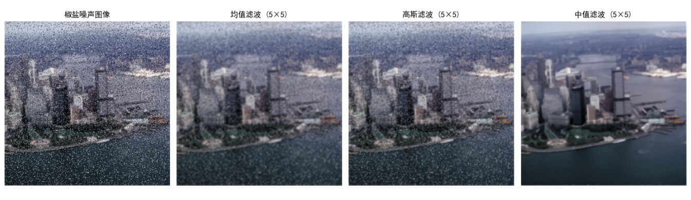
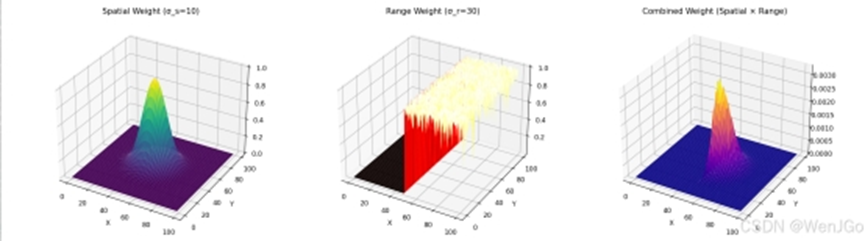
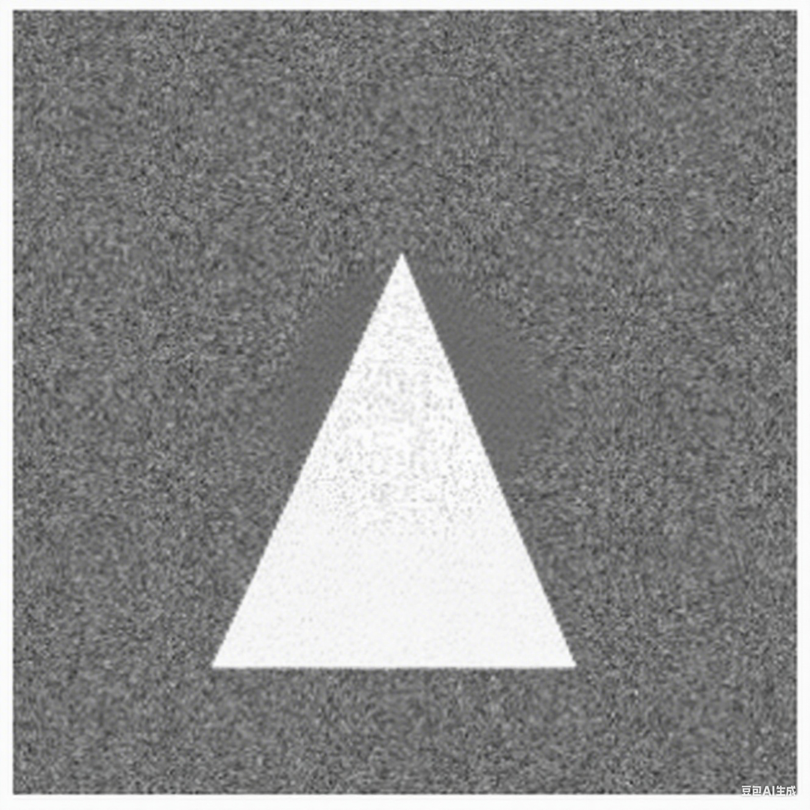
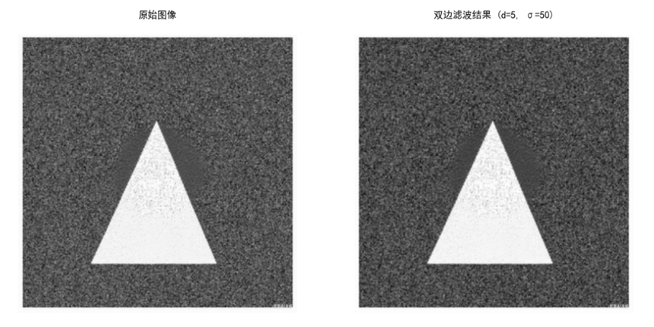
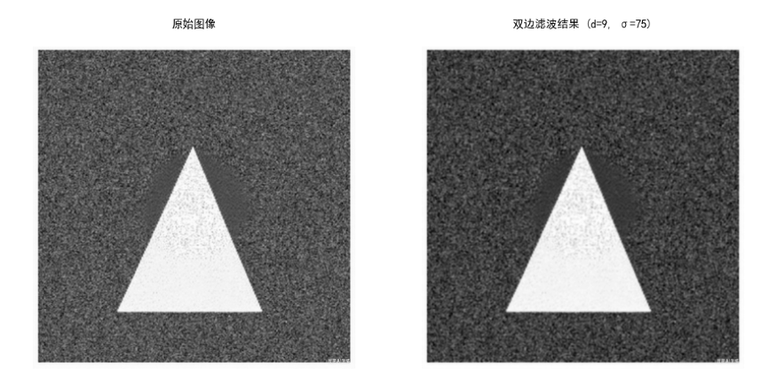
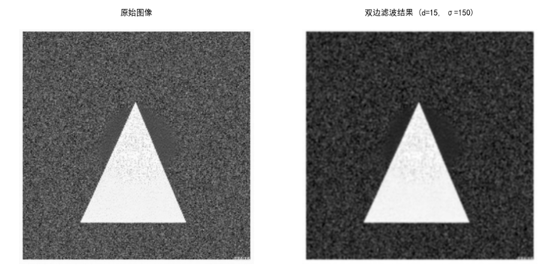
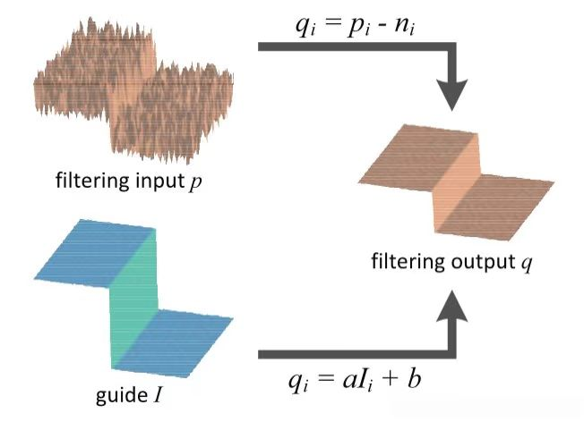
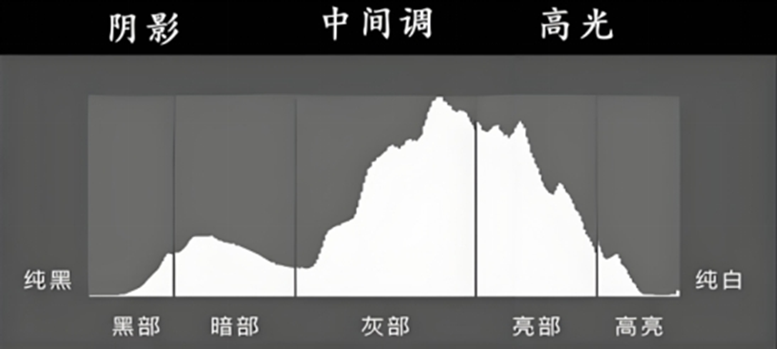
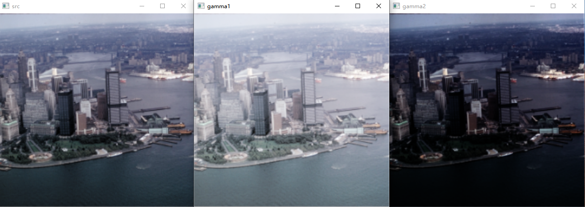

第三章 图像预处理与增强技术
随着人工智能和计算机视觉技术的快速发展，图像数据在医学影像、自动驾驶、工业检测等众多领域扮演着至关重要的角色。然而，现实环境中的图像数据往往受到各种噪声和失真影响，导致原始数据质量参差不齐。这些噪声和失真不仅会影响人类对图像内容的理解，更会严重干扰后续的自动化分析与智能决策。因此，如何对原始图像进行有效的预处理和增强，成为提升视觉任务性能的基础环节。
图像预处理与增强技术，主要目的是提高图像的质量与可用性，为后续的视觉算法（如分割、检测与识别等）提供更高质量的数据输入。通过降噪、平滑、锐化、对比度增强、颜色校正等方法，可以最大限度地恢复或提升图像的有效信息，抑制不利因素，提高视觉系统的鲁棒性与泛化能力。
在本章中，我们将系统梳理和介绍常见的图像预处理与增强技术。内容包括：图像噪声类型及其评价指标，空间域平滑与边缘保留滤波方法，对比度增强与图像均衡，频域增强理论与方法，以及面向色彩恢复的Retinex模型等。每一节不仅涵盖相关算法原理与实现细节，还将结合典型案例和实际应用场景，帮助读者建立完整的理论体系，并具备面向实际问题选择与设计图像增强方案的能力。
通过本章的学习，读者将能够：
- 熟练识别并评价图像中的常见噪声类型；
- 掌握不同滤波器的基本思想和应用场景；
- 理解主流图像增强算法的工作机制及优缺点；
- 运用Retinex等先进理论提升图像的可视质量；
- 为高质量的计算机视觉任务奠定坚实的数据基础。
3.1 图像噪声模型与评估
在图像采集、传输和存储过程中，由于成像设备物理限制、外部环境干扰、信号压缩等因素，图像常常不可避免地受到各种噪声的污染。这些噪声不仅影响图像的可视质量，也会干扰后续如目标检测、语义分割等高层计算机视觉任务的准确性。因此，理解常见图像噪声模型及其影响，掌握图像质量的客观评价指标，是从事图像处理和计算机视觉研究不可或缺的基础能力。
本小节将系统介绍三种典型的图像噪声类型：高斯噪声、椒盐噪声以及与相机ISO相关的感光噪声（ISO Noise），并进一步讲解用于评价图像质量和降噪效果的常用指标，如信噪比（SNR）、峰值信噪比（PSNR）等。
3.1.1 噪声模型
3.1.1.1 高斯噪声
高斯噪声是一种常见的噪声类型，其像素值的扰动服从高斯分布（正态分布）。高斯噪声通常由成像传感器中的热噪声或电子噪声引起，尤其在低光照条件下更为明显。它的特点是噪声值在整个图像中呈随机分布，且大多数噪声值较小，少数噪声值较大。
高斯噪声图像通常可以表示为：
I'(x, y) = I(x, y) + n(x, y) 其中： - I(x, y) 是原始图像（无噪图像）在位置(x,y)的像素值。 - I'(x, y) 是有噪声图像在位置(x,y)的像素值。 - n(x, y) 是在位置(x,y)的随机噪声值，随机噪声服从均值为\mu、均方差为\sigma的高斯分布，其概率密度函数（PDF）为：
f(z) = \frac{1}{\sqrt{2\pi}\sigma} e^{-\frac{(z-\mu)^2}{2\sigma^2}} \mu通常假设为0（即无偏噪声），均方差\sigma 越大表示噪声强度大。
高斯噪声可以通过以下步骤在图像上模拟生成： 1. 为每个像素生成一个服从高斯分布的随机数，通常使用均值 \mu=0，标准差 \sigma 可根据需要调整。 2. 将随机噪声值加到原始像素值上。 3. 对结果进行裁剪，确保像素值在有效范围内（例如，灰度图像为 [0, 255]）。
例3.1：给一张灰度图添加高斯噪声，代码如下，结果如图3-1-1所示。
import cv2
import matplotlib.pyplot as plt
import numpy as np
# 读取图像
image = cv2.imread('./imgs/tu3001.png', cv2.IMREAD_GRAYSCALE)
#以灰度图读取图像
# image = cv2.imread('path_to_your_image.jpg', cv2.IMREAD_COLOR) # 如果是彩色图
# 生成高斯噪声
gaussian_noise = np.random.normal(0, 0.1 * 255, image.shape)
# 噪声的强度为0.1*255=25.5，gaussian_noise与image同大小
# 将噪声添加到图像上
noisy_image = image + gaussian_noise
#np.clip(noisy_image, 0, 255)确保像素值在有效范围内(0-255)，小于0的置0，大于255的置255
#astype(np.uint8)将数据类型设为uint8
noisy_image = np.clip(noisy_image, 0, 255).astype(np.uint8)
# 显示或保存结果
plt.rcParams['font.sans-serif'] = ['SimHei'] #中文标签字体
plt.subplot(1,2,1) #显示1行2列子图第1个子图
plt.axis('off') #关闭子图坐标轴
plt.gray() #灰度显示
plt.title('原图(Gray)') #子图标题
plt.imshow(image) #显示图像
plt.subplot(1,2,2) #显示1行2列子图第2个子图
plt.axis('off') #关闭子图坐标轴
plt.title('高斯噪声图像') #子图标题
plt.imshow(noisy_image) #显示图像
plt.show() #显示创建的所有图形/图像{kind=link}
例3.2：给一张RGB彩色图像添加高斯噪声，代码如下，结果如图3-1-2所示。
import cv2
import matplotlib.pyplot as plt
import numpy as np
# 读取RGB彩色图像
image = cv2.imread('./imgs/tu3001.png', cv2.IMREAD_COLOR) # 如果是彩色图
image = cv2.cvtColor(image, cv2.COLOR_BGR2RGB) #Opencv读取图像是BGR色彩空间，plt采用标准RGB色彩空间，所以需要把image从BGR转换成RGB
# 生成高斯噪声
gaussian_noise = np.random.normal(0, 0.1 * 255, image.shape)
# 噪声的强度为0.1*255=25.5，gaussian_noise与image同大小
# 将噪声添加到图像上
noisy_image = image + gaussian_noise
#np.clip(noisy_image, 0, 255)确保像素值在有效范围内(0-255)，小于0的置0，大于255的置255
#astype(np.uint8)将数据类型设为uint8
noisy_image = np.clip(noisy_image, 0, 255).astype(np.uint8)
# 显示或保存结果
plt.rcParams['font.sans-serif'] = ['SimHei'] #支持中文显示
plt.subplot(1,2,1) #显示1行2列子图第1个子图
plt.axis('off') #关闭子图坐标轴
plt.title('原图') #子图标题
plt.imshow(image) #显示图像
plt.subplot(1,2,2) #显示1行2列子图第2个子图
plt.axis('off') #关闭子图坐标轴
plt.title('高斯噪声图像') #子图标题
plt.imshow(noisy_image) #显示图像
plt.show() #显示创建的所有图形/图像{kind=link}
从上述两个例子可以看到，高斯噪声在图像中表现为细小的、均匀分布的像素值波动，类似于“雪花”效应。它对图像的整体对比度和细节清晰度有一定影响，但在高强度时可能显著降低图像质量。实际应用中，高斯噪声常用于模拟低光照条件下的成像效果。
3.1.1.2 椒盐噪声
椒盐噪声（Salt-and-Pepper Noise）是一种非连续的噪声类型，表现为图像中随机出现的黑点（椒噪声，接近0）和白点（盐噪声，接近255）。这种噪声通常由传感器故障、模数转换错误或数据传输中的位错误引起。
椒盐噪声可以看作是一种二值噪声模型，其特点是部分像素被替换为最大值或最小值，而其他像素保持不变。其概率模型为：
P(z) = \begin{cases} p_a & \text{if } z = 0 \text{ (椒噪声)} \\ p_b & \text{if } z = 255 \text{ (盐噪声)} \\ 1 - p_a - p_b & \text{if } z = I(x, y) \end{cases}
其中： - p_a 是椒噪声的概率。 - p_b 是盐噪声的概率。 - 通常 p_a + p_b \ll 1，表示噪声只影响小部分像素。
椒盐噪声的模拟生成步骤如下： 1. 随机选择图像中一定比例（例如，5%）的像素。 2. 将这些像素随机赋值为0（椒噪声）或255（盐噪声）。 3. 其余像素保持原始值不变。
例3.3 灰度图像添加10%比例椒盐噪声的示例代码如下，效果如图3-1-3所示。
import cv2
import matplotlib.pyplot as plt
import numpy as np
# 读取图像
image = cv2.imread('./imgs/tu3001.png', cv2.IMREAD_GRAYSCALE)
#以灰度图读取图像
salt_pepper_ratio = 0.1 #控制产生椒盐噪声像素点的比例
h, w = image.shape[:2] # 获取图片的高和宽
number_salt_pepper = int(salt_pepper_ratio * h * w) #生成椒盐点总数量
noisy_image = np.copy(image)
for i in range(number_salt_pepper):
x = np.random.randint(1, h) #在1~h之间随机产生一个数
y= np.random.randint(1, w) #在1~w之间随机产生一个数
if np.random.randint(0, 2) == 0: #随机产生0和1，0生成椒噪声，1生成盐噪声，两者产生的概率相同
noisy_image[x, y] = 0
else:
noisy_image[x,y] = 255
# 显示或保存结果
plt.rcParams['font.sans-serif'] = ['SimHei'] #支持中文显示
plt.subplot(1,2,1) #显示1行2列子图第1个子图
plt.axis('off') #关闭子图坐标轴
plt.gray() #灰度显示
plt.title('原图(Gray)') #子图标题
plt.imshow(image) #显示图像
plt.subplot(1,2,2) #显示1行2列子图第2个子图
plt.axis('off') #关闭子图坐标轴
plt.title('椒盐噪声图像') #子图标题
plt.imshow(noisy_image) #显示图像
plt.show() #显示创建的所有图形/图像{kind=link}
例3.4 灰度图像添加10%比例椒盐噪声的示例代码如下，效果如图3-1-4所示。
import cv2
import matplotlib.pyplot as plt
import numpy as np
# 读取图像
image = cv2.imread('./imgs/tu3001.png', cv2.IMREAD_COLOR)
image = cv2.cvtColor(image,cv2.COLOR_BGR2RGB) #图像色彩空间从BGR转换至RGB，便于plt显示
#以灰度图读取图像
salt_pepper_ratio = 0.1 #控制产生椒盐噪声像素点的比例
h, w = image.shape[:2] # 获取图片的高和宽
number_salt_pepper = int(salt_pepper_ratio * h * w) #生成椒盐点总数量
noisy_image = np.copy(image)
for i in range(number_salt_pepper):
x = np.random.randint(1, h) #在1~h之间随机产生一个数
y= np.random.randint(1, w) #在1~w之间随机产生一个数
if np.random.randint(0, 2) == 0: #随机产生0和1，0生成椒噪声，1生成盐噪声，两者产生的概率相同
noisy_image[x, y] = [0,0,0]
else:
noisy_image[x,y] = [255,255,255]
# 显示或保存结果
plt.rcParams['font.sans-serif'] = ['SimHei'] #支持中文显示
plt.subplot(1,2,1) #显示1行2列子图第1个子图
plt.axis('off') #关闭子图坐标轴
plt.title('RGB原图') #子图标题
plt.imshow(image) #显示图像
plt.subplot(1,2,2) #显示1行2列子图第2个子图
plt.axis('off') #关闭子图坐标轴
plt.title('椒盐噪声图像') #子图标题
plt.imshow(noisy_image) #显示图像
plt.show() #显示创建的所有图形/图像{kind=link}
椒盐噪声在图像中表现为明显的黑白点，容易引起视觉干扰，并对边缘检测、特征提取等任务产生较大影响。由于其非连续性，椒盐噪声通常需要专门的滤波方法（如中值滤波）来去除。
3.1.1.3 ISO噪声
ISO噪声是指在数码相机中由于高感光度（ISO值）设置而引入的噪声。在高ISO设置下，相机传感器会放大信号以捕获更多光线，但同时也会放大噪声，导致图像质量下降。ISO噪声通常是高斯噪声和其他噪声（如光子噪声）的复合效应，尤其在低光照条件下更为显著。
ISO噪声的数学建模较为复杂，因为它不仅包含高斯噪声，还可能包括光子噪声（服从泊松分布）和读出噪声等。其简化模型通常假设为高斯噪声或者近高斯噪声。实际中，ISO噪声的强度还与传感器的性能、像素大小和环境光照条件有关。
ISO噪声在高ISO设置下会导致图像出现明显的颗粒感，尤其在暗部区域更为显著。它对图像的动态范围和色彩保真度有较大影响，是数码摄影中的主要噪声来源之一。实际应用中，ISO噪声的控制需要权衡感光度和图像质量。
3.1.2 图像质量评估指标
为了量化噪声对图像质量的影响，信噪比（SNR）和峰值信噪比（PSNR）是两种常用的评估指标。它们通过比较原始图像与噪声图像的差异，为图像处理算法的性能提供客观依据。
3.1.2.1 信噪比（SNR）
定义
信噪比（Signal-to-Noise Ratio, SNR）是衡量信号强度与噪声强度的相对关系的指标。在图像处理中，SNR表示原始图像信号与噪声之间的功率比，通常以分贝（dB）为单位，其定义为：
\text{SNR} = 10 \lg \left( \frac{Var(I)}{Var(I'-I)} \right)
其中： - Var(I) 表示无噪声（原始）图像的方差,其具体计算为： Var(I) = \frac{1}{MN} \sum_{x=0}^{M-1} \sum_{y=0}^{N-1} I(x, y)^2 其中 M \times N 是图像的分辨率，I(x, y) 是原始图像的像素值。
- Var(I'-I) 表示I与形变（噪声）图像I'之差的方差，即噪声的方差，其具体计算为： Var(I'-I) = \frac{1}{MN} \sum_{x=0}^{M-1} \sum_{y=0}^{N-1} (I'(x, y) - I(x, y))^2 其中 I'(x, y) 是噪声图像的像素值。
SNR值越高，表示噪声对图像的影响越小，图像质量越高。
3.1.2.2 峰值信噪比（PSNR）
峰值信噪比（Peak Signal-to-Noise Ratio, PSNR）是另一种广泛使用的图像质量评估指标，与SNR类似，PSNR同样以分贝为单位，其公式为：
\text{PSNR} = 10 \lg \left( \frac{L^2}{Var(I'-I)} \right)
其中 L 是图像像素的最大可能值（例如，8位灰度图像为255）。
PSNR与SNR都是基于误差方差，用于量化噪声影响，值越高表示图像质量越好。不同之处在于SNR考虑信号和噪声的功率比，适用于多种信号处理场景，而PSNR基于最大像素值，更多用于图像压缩和去噪任务的评估。
在计算机视觉研究中，PSNR因其简单性和标准化程度更高而更常使用，如比较不同去噪算法的性能；评估压缩算法在不同压缩率下的图像质量；比较不同传感器或相机在不同ISO设置下的图像质量；在生成对抗网络（GAN）或超分辨率任务中，PSNR常用于评估生成图像与真实图像的相似度。
3.2 空域平滑滤波
空域平滑滤波是计算机视觉和图像处理中的基础技术，用于减少图像中的噪声、平滑图像细节，同时保留主要结构信息。本章节将详细介绍三种常见的空域平滑滤波方法：均值滤波、高斯滤波和中值滤波。我们将从基本概念出发，深入探讨它们的数学原理、算法实现、应用场景以及优缺点比较，旨在为研究生提供全面的理论和实践指导。
3.2.1 空域滤波的基础知识
空域滤波是指直接在图像的像素空间（即空域）上对像素值进行操作的技术。平滑滤波的目标是通过对像素及其邻域的加权或统计操作，降低图像中的噪声（如高斯噪声、椒盐噪声等），同时尽量保留图像的边缘和结构信息。空域滤波通常基于卷积操作或统计方法，主要包括线性滤波（如均值滤波和高斯滤波）和非线性滤波（如中值滤波）。
空域滤波通常通过卷积操作实现。卷积是将一个卷积核（或模板）与图像进行滑动窗口运算，计算输出像素值。对二维于图像 (I(x, y)) 和二维卷积核 (K(m, n))，二维卷积定义为：
O(x, y) = \sum_{m=-k}^{k} \sum_{n=-k}^{k} I(x+m, y+n) \cdot K(m, n)
其中，O(x, y) 是输出图像的像素值，k 是滤波核的半径（例如：3\times 3 核的 k=1，5\times 5 的 k=2。
{kind=link}
图3-2-1展示了一个二维卷积过程，从图中可以看出，卷积后的图像变小了，因为以原图边界处像素点为中心时，会有一部分权重没有对应像素，因此，若是想要卷积结果与原图保持同大小，我们需要在图像的边界补齐，对于3\times 3卷积核要补1“圈”，对于5\times 5 卷积核要补2“圈”。最常见的方法是补0值，这种方法称作Zero Padding。
卷积核的大小和权重决定了滤波的效果，设置不同的卷积核可以实现多种视觉任务，如图像去噪、图像模糊、边缘检测等等。
3.2.2 均值滤波
均值滤波（Mean Filtering）是一种简单的线性滤波方法，通过取像素及其邻域的平均值来平滑图像。它假设噪声是随机的，通过平均化可以削弱噪声的影响。均值滤波的滤波核通常是一个归一化的均匀权重矩阵，例如 3x3 核为：
K = \frac{1}{9} \begin{bmatrix} 1 & 1 & 1 \\ 1 & 1 & 1 \\ 1 & 1 & 1 \end{bmatrix}
例3.5 对高斯噪声图像采用3\times 3的均值滤波，代码如下，效果如图3-2-2所示。
import numpy as np
import cv2
import matplotlib.pyplot as plt
image = cv2.imread('./imgs/tu3001.png', cv2.IMREAD_COLOR)
image = cv2.cvtColor(image,cv2.COLOR_BGR2RGB)
#生成高斯噪声图像
noisy_image = image + np.random.normal(0, 0.1 * 255, image.shape)
noisy_image = np.clip(noisy_image, 0, 255).astype(np.uint8)
#利用OpenCV提供的blur()函数实现均值滤波操作
filter_image = cv2.blur(noisy_image, (3,3))
plt.rcParams['font.sans-serif'] = ['SimHei'] #支持中文显示
plt.subplot(1,3,1) #显示1行3列子图第1个子图
plt.axis('off') #关闭子图坐标轴
plt.title('原图') #子图标题
plt.imshow(image) #显示图像
plt.subplot(1,3,2) #显示1行3列子图第2个子图
plt.axis('off') #关闭子图坐标轴
plt.title('噪声图像') #子图标题
plt.imshow(noisy_image) #显示图像
plt.subplot(1,3,3) #显示1行3列子图第3个子图
plt.axis('off') #关闭子图坐标轴
plt.title('均值滤波图') #子图标题
plt.imshow(filter_image) #显示图像
plt.show() #显示创建的所有图形/图像{kind=link}
均值滤波的优点在于： - 实现简单，计算效率高； - 对高斯噪声有较好的平滑效果。
缺点是： - 均值滤波对所有像素一视同仁，会导致边缘模糊。 - 对椒盐噪声的抑制效果较差。 - 滤波核越大，平滑效果越强，但图像细节损失越多
3.2.3 高斯滤波
高斯滤波（Gaussian filter）包含多种类型，包括低通、带通和高通等。我们通常在图像处理中提到的高斯滤波，指的是高斯模糊（Gaussian Blur），是一种高斯低通滤波，过滤掉图像高频成分（图像细节部分），保留图像低频成分（图像平滑区域），因此对图像进行“高斯模糊”后，图像会变得模糊。
与均值滤波不同，高斯滤波根据像素与中心像素的距离分配权重，距离越近的像素权重越高。这种方法能够更好地保留图像边缘，同时平滑噪声。高斯模糊对于抑制高斯噪声（服从高斯分布的噪声）非常有效。
高斯滤波核由二维高斯函数生成（均值\mu通常设为0）：
G(x, y) = \frac{1}{2\pi\sigma^2} e^{-\frac{x^2 + y^2}{2\sigma^2}}
其中，\sigma 是高斯分布的标准差，控制平滑程度；卷积核中心为坐标原点，(x,y)是相对于模板中心的坐标。按照二维高斯分布生成后，需要归一化以确保权重之和为 1（避免图像偏亮或偏暗）。例如，均方差为\sigma=1.5 的 3\times 3 的高斯卷积模板如下： \begin{bmatrix} 0.014 & 0.028 & 0.014 \\ 0.028 & 0.057 & 0.028 \\ 0.014 & 0.028 & 0.014 \end{bmatrix}
例3.6 对高斯噪声图像采用5\times 5的高斯滤波，代码如下，效果如图3-2-3所示。
import numpy as np
import cv2
import matplotlib.pyplot as plt
image = cv2.imread('./imgs/tu3001.png', cv2.IMREAD_COLOR)
image = cv2.cvtColor(image, cv2.COLOR_BGR2RGB)
#生成高斯噪声图像
noisy_image = image + np.random.normal(0, 0.1 * 255, image.shape)
noisy_image = np.clip(noisy_image, 0, 255).astype(np.uint8)
#利用OpenCV提供的GaussianBlur()函数实施高斯滤波操作
filter_image = cv2.GaussianBlur(noisy_image, (5,5), 1)
plt.rcParams['font.sans-serif'] = ['SimHei'] #支持中文显示
plt.subplot(1,3,1) #显示1行3列子图第1个子图
plt.axis('off') #关闭子图坐标轴
plt.title('原图') #子图标题
plt.imshow(image) #显示图像
plt.subplot(1,3,2) #显示1行3列子图第2个子图
plt.axis('off') #关闭子图坐标轴
plt.title('噪声图像') #子图标题
plt.imshow(noisy_image) #显示图像
plt.subplot(1,3,3) #显示1行3列子图第3个子图
plt.axis('off') #关闭子图坐标轴
plt.title('高斯滤波图') #子图标题
plt.imshow(filter_image) #显示图像
plt.show() #显示创建的所有图形/图像{kind=link}
该例中采用OpenCV提供的GaussianBlur函数实现高斯滤波，它的原型为：
cv2.GaussianBlur(src, ksize, sigmaX[, dst[, borderType[, anchor]]])主要参数如下： - src：输入图像，即需要进行高斯模糊处理的原始图像。 - ksize：高斯核的大小，必须是一个奇数，且可以有两个、三个或五个元素。例如，(3, 3)、(5, 5)、(3, 5, 5)等。核的大小决定了模糊的程度，核越大，模糊效果越明显。 - sigmaX：高斯核的X方向标准差。这个参数可以根据需要进行调整，以控制模糊的程度。sigmaX的值越大，模糊效果越明显。 - dst：输出图像，即经过高斯模糊处理后的图像。这个参数可以省略，如果省略，函数将返回一个新的图像对象。 - borderType：像素外插法，用于处理图像边界的像素。默认值为cv2.BORDER_DEFAULT。这个参数可以根据需要进行调整，以满足特定的图像处理需求。 - anchor：锚点，即高斯核的中心点坐标。默认值为(-1, -1)，表示核的中心点在核的中心位置。这个参数可以根据需要进行调整，以改变核的中心点位置。
高斯滤波的优点是： - 根据距离加权，能更好保留边缘信息。 - 对高斯噪声的平滑效果优于均值滤波。 - 通过调整 \sigma，可以灵活控制平滑程度。
高斯滤波的缺点是： - 计算复杂度高于均值滤波。 - 对椒盐噪声的抑制效果仍然有限。
3.2.4 中值滤波
中值滤波（Median Filtering）是一种非线性滤波方法，通过取邻域像素值的中值替换中心像素值。与线性滤波不同，中值滤波不依赖于加权平均，而是基于统计排序，能够有效去除椒盐噪声，同时保留边缘信息。
中值滤波的计算公式为：
O(x, y) = \text{median} \{ I(i, j) \mid (i, j) \in S \}
其中，S 是滤波核覆盖的邻域，\text{median} 表示取中值。
例3.7 采用中值滤波技术对椒盐噪声图像去噪代码如下，去噪效果如图3-2-4所示。
import numpy as np
import cv2
import matplotlib.pyplot as plt
image = cv2.imread('./imgs/tu3001.png', cv2.IMREAD_COLOR)
image = cv2.cvtColor(image,cv2.COLOR_BGR2RGB)
#生成椒盐噪声图像
salt_pepper_ratio = 0.1 #控制产生椒盐噪声像素点的比例
h, w = image.shape[:2] # 获取图片的高和宽
number_salt_pepper = int(salt_pepper_ratio * h * w) #生成椒盐点总数量
noisy_image = np.copy(image)
for i in range(number_salt_pepper):
x = np.random.randint(1, h) #在1~h之间随机产生一个数
y= np.random.randint(1, w) #在1~w之间随机产生一个数
if np.random.randint(0, 2) == 0: #随机产生0和1，0生成椒噪声，1生成盐噪声，两者产生的概率相同
noisy_image[x, y] = [0,0,0]
else:
noisy_image[x,y] = [255,255,255]
filter_image = cv2.medianBlur(noisy_image, 3) #利用OpenCV提供的medianBlur()函数进行中值滤波操作
plt.rcParams['font.sans-serif'] = ['SimHei'] #支持中文显示
plt.subplot(1,3,1) #显示1行3列子图第1个子图
plt.axis('off') #关闭子图坐标轴
plt.title('原图') #子图标题
plt.imshow(image) #显示图像
plt.subplot(1,3,2) #显示1行3列子图第2个子图
plt.axis('off') #关闭子图坐标轴
plt.title('噪声图像') #子图标题
plt.imshow(noisy_image) #显示图像
plt.subplot(1,3,3) #显示1行3列子图第3个子图
plt.axis('off') #关闭子图坐标轴
plt.title('中值滤波图') #子图标题
plt.imshow(filter_image) #显示图像
plt.show() #显示创建的所有图形/图像{kind=link}
从该例中能看出，中值滤波技术对椒盐噪声的去除效果极佳，能较好保留边缘信息，避免模糊，不受极值像素影响，鲁棒性强。但是计算复杂度较高（需排序），对高斯噪声的平滑效果不如高斯滤波。
3.2.5 三种滤波方法的比较
（1）数学特性
- 均值滤波：线性滤波，基于均匀加权平均，计算简单但会模糊边缘。
- 高斯滤波：线性滤波，基于距离加权，平滑效果更好，边缘保留能力较强。
- 中值滤波：非线性滤波，基于统计中值，对椒盐噪声鲁棒，边缘保留能力优于均值滤波。
（2）噪声处理能力
| 滤波方法 | 高斯噪声 | 椒盐噪声 | 边缘保留 |
|---|---|---|---|
| 均值滤波 | 良好 | 较差 | 较差 |
| 高斯滤波 | 优秀 | 较差 | 良好 |
| 中值滤波 | 一般 | 优秀 | 优秀 |
（3）计算复杂度
- 均值滤波：复杂度为 (O(N))，其中 N 是邻域像素数，计算最简单。
- 高斯滤波：复杂度为 (O(N))，但需额外计算高斯核，略高于均值滤波。
- 中值滤波：复杂度为 (O(N N))，因涉及排序，计算成本最高。
（4）实际实现与效果分析
例3.8 展示如何对含高斯噪声图像应用三种滤波方法并比较效果，代码如下，效果如图3-2-5所示。
import numpy as np
import cv2
import matplotlib.pyplot as plt
# 读取图像
image = cv2.imread('./imgs/1.png', cv2.IMREAD_COLOR)
image = cv2.cvtColor(image, cv2.COLOR_BGR2RGB)
# 生成高斯噪声
mean = 0
var = 0.1
sigma = var ** 0.5
gaussian = np.random.normal(mean, sigma, image.shape) * 50
noisy_image = np.clip(image + gaussian, 0, 255).astype(np.uint8)
# 应用三种滤波方法
mean_filtered = cv2.blur(noisy_image, (5, 5))
gaussian_filtered = cv2.GaussianBlur(noisy_image, (5, 5), 0)
median_filtered = cv2.medianBlur(noisy_image, 5)
# 显示结果
plt.rcParams['font.sans-serif'] = ['SimHei']
plt.figure(figsize=(15, 5))
plt.subplot(1, 4, 1)
plt.axis('off')
plt.title('高斯噪声图像')
plt.imshow(noisy_image)
plt.subplot(1, 4, 2)
plt.axis('off')
plt.title('均值滤波 (5×5)')
plt.imshow(mean_filtered)
plt.subplot(1, 4, 3)
plt.axis('off')
plt.title('高斯滤波 (5×5)')
plt.imshow(gaussian_filtered)
plt.subplot(1, 4, 4)
plt.axis('off')
plt.title('中值滤波 (5×5)')
plt.imshow(median_filtered)
plt.tight_layout()
plt.show(){kind=link}
例3.9 展示如何对含椒盐噪声图像应用三种滤波方法并比较效果，代码如下，效果如图3-2-6所示。
import numpy as np
import cv2
import matplotlib.pyplot as plt
# 读取图像
image = cv2.imread('./imgs/tu3001.png', cv2.IMREAD_COLOR)
image = cv2.cvtColor(image, cv2.COLOR_BGR2RGB)
# 生成椒盐噪声
h, w = image.shape[:2]
noisy_image = np.copy(image)
salt_vs_pepper = 0.5
amount = 0.04
num_salt = np.ceil(amount * image.size * salt_vs_pepper)
num_pepper = np.ceil(amount * image.size * (1.0 - salt_vs_pepper))
# 添加盐噪声
coords = [np.random.randint(0, i-1, int(num_salt)) for i in image.shape[:2]]
noisy_image[coords[0], coords[1], :] = 255
# 添加椒噪声
coords = [np.random.randint(0, i-1, int(num_pepper)) for i in image.shape[:2]]
noisy_image[coords[0], coords[1], :] = 0
# 应用三种滤波方法
mean_filtered = cv2.blur(noisy_image, (5, 5))
gaussian_filtered = cv2.GaussianBlur(noisy_image, (5, 5), 0)
median_filtered = cv2.medianBlur(noisy_image, 5)
# 显示结果
plt.rcParams['font.sans-serif'] = ['SimHei']
plt.figure(figsize=(15, 5))
plt.subplot(1, 4, 1)
plt.axis('off')
plt.title('椒盐噪声图像')
plt.imshow(noisy_image)
plt.subplot(1, 4, 2)
plt.axis('off')
plt.title('均值滤波 (5×5)')
plt.imshow(mean_filtered)
plt.subplot(1, 4, 3)
plt.axis('off')
plt.title('高斯滤波 (5×5)')
plt.imshow(gaussian_filtered)
plt.subplot(1, 4, 4)
plt.axis('off')
plt.title('中值滤波 (5×5)')
plt.imshow(median_filtered)
plt.tight_layout()
plt.show()
（5）效果分析- 均值滤波：能有效降低高斯噪声，但对椒盐噪声效果不佳，且会导致明显边缘模糊。
- 高斯滤波：在高斯噪声场景下表现最佳，边缘保留能力优于均值滤波。
- 中值滤波：对椒盐噪声的去除效果显著，边缘细节保留较好，但在高斯噪声场景下效果一般。
3.3 边缘保留滤波
边缘保留滤波是计算机视觉和图像处理中的高级技术，旨在在平滑图像、去除噪声的同时尽可能保留图像的边缘和结构信息。边缘保留滤波是一种在图像去噪过程中优先保留边缘信息的滤波技术。传统平滑滤波（如均值滤波和高斯滤波）通过对像素值进行平均或加权平均来减少噪声，但往往会导致边缘模糊。而边缘保留滤波通过引入像素值差异、空间距离或其他结构信息，区分边缘和非边缘区域，从而在去噪的同时保留图像的关键特征。
边缘是图像中像素值发生显著变化的区域，通常对应于物体的边界或纹理。边缘信息在计算机视觉任务（如目标检测、图像分割）中至关重要。所以，在去除噪声（如高斯噪声、椒盐噪声）的同时保留边缘和细节，避免过度平滑，保持图像的结构完整性，就显得很重要，这就是边缘保留滤波的主要目标。
边缘保留滤波本质仍是空域滤波，但是卷积核权值计算比较复杂，根据其依赖邻域或全局来分为两大类： - 局部滤波：如双边滤波和导向滤波，基于局部邻域的像素值和空间信息进行处理。 - 全局滤波：如非局部均值滤波，考虑图像中更广泛的区域，利用相似性进行去噪。
本小节将详细介绍三种重要的边缘保留滤波方法：双边滤波、导向滤波和非局部均值滤波。
3.3.1 双边滤波
3.3.1.1 基本原理
双边滤波（Bilateral Filtering）是一种非线性滤波方法，结合了空间距离和像素值差异的权重进行平滑。它通过两个高斯函数分别对空间距离和像素强度差异进行加权，确保靠近中心像素且像素值相似的像素对结果贡献更大，从而保留边缘。
双边滤波的数学表达式为：
I^{\prime}(x)=\frac{1}{W}\sum_{y\in\Omega}I(y)\cdot f_{\sigma_{s}}(\|x-y\|)\cdot f_{r}(|I(x)-I(y)|) 其中： I(x)：输入图像中像素 x 的强度值 I′(x)：输出图像中像素 x 的强度值 Ω：像素 x 的邻域 f_d(\|x - y\|)是空间权重，表示邻域内像素的位置关系，通常是一个高斯函数 $f_r(|I(x) - I(y)|) $是颜色权重，表示像素之间的颜色相似性，也是一个高斯函数 W 是归一化系数，确保权重的总和为 1

3D 权重分布图： 左图：空间权重（以目标像素为中心的高斯分布）。 中图：值域权重（在像素值相似的区域权重高）。 右图：综合权重（仅在空间邻近且像素值相似的区域高亮）。
滤波结果对比图： 左图：带噪声的原图像（明暗边缘清晰）。 右图：双边滤波结果（噪声被平滑，边缘保留） #### 双边滤波的特点 （1）保留边缘信息 传统的线性滤波（如均值滤波、高斯滤波）在去噪的同时会导致图像模糊，包括边缘的模糊。 双边滤波通过结合空间权重和颜色权重，使得相似颜色的像素被平滑，而边缘的不同颜色像素得以保留，从而避免边缘被模糊化。 例如，在处理人脸图像时，可以去除噪声但仍保持五官的清晰度。 （2）空间权重 + 颜色权重 双边滤波的计算依赖两个权重： 空间权重（几何权重）：基于像素之间的物理距离，决定了相邻像素的影响程度，通常使用高斯函数计算：
由参数 sigmaSpace 控制，值越大，远处的像素影响越大。 作用类似于高斯模糊，限制远距离像素的影响。 颜色权重（强度权重）：基于像素灰度值（或颜色）之间的相似性，决定了颜色接近的像素影响程度，通常使用高斯函数计算： 颜色相近的像素权重较高，差异较大的像素影响较小，从而防止边缘模糊。由参数 sigmaColor 控制，值越大，即使颜色相差较大仍然会被平滑。最终的权重由两者的乘积决定： （3）去噪的同时保持细节 普通均值滤波会平均周围像素的值，导致细节丢失，图像变模糊。 双边滤波只平滑相似颜色的像素，不同颜色的像素（如边缘）权重较低，因此边缘能得到保留。 （4）计算量较大 由于每个像素的计算都需要遍历其邻域并计算权重，双边滤波的计算量远大于普通高斯滤波。 计算复杂度为 O(N^2)，比高斯滤波的 O(1) 复杂得多，因此在大图像上处理较慢。 改进方法： 高效双边滤波（Fast Bilateral Filter）：使用降采样和快速卷积优化计算。 导向滤波（Guided Filter）：计算复杂度降低至 O(1)，且效果接近双边滤波。 （5）参数选择对效果影响很大 双边滤波的参数选择直接决定了效果：d（邻域直径）： 小值（如 5）：影响范围小，平滑效果较弱，但边缘保持较好。 大值（如 15+）：影响范围大，平滑更强，但可能损失更多细节。
sigmaColor（颜色标准差）： 小值（如 20）：只考虑颜色非常相近的像素，保留更多细节，但去噪效果较差。 大值（如 100）：即使颜色差距较大也会平滑，去噪更强，但可能导致色彩丢失。
sigmaSpace（空间标准差）： 小值（如 10）：仅影响局部区域，细节保留较好。 大值（如 100）：影响更大范围，模糊效果更强。 #### 3.3.1.2 实现方法
例3.10 以下是基于 Python 和 NumPy 的双边滤波实现，代码如下，原图为3-3-1所示，效果如图3-3-2、3-3-3、3-3-4所示。
import cv2
import numpy as np
import matplotlib.pyplot as plt
# 设置中文字体显示
plt.rcParams['font.sans-serif'] = ['SimHei'] # 使用黑体
plt.rcParams['axes.unicode_minus'] = False # 解决负号显示问题
# 读取图像
img = cv2.imread("./imgs/3.png", cv2.IMREAD_GRAYSCALE)
# 应用双边滤波
bilateral = cv2.bilateralFilter(img, d=15, sigmaColor=150, sigmaSpace=150)
# 创建图形并设置布局
plt.figure(figsize=(12, 6), dpi=100)
# 显示原始图像
plt.subplot(1, 2, 1)
plt.imshow(img, cmap='gray')
plt.title("原始图像", fontsize=12, pad=20)
plt.axis("off")
# 显示滤波结果
plt.subplot(1, 2, 2)
plt.imshow(bilateral, cmap='gray')
plt.title("双边滤波结果 (d=15, σ=150)", fontsize=12, pad=20)
plt.axis("off")
# 调整布局
plt.subplots_adjust(left=0.05, right=0.95, top=0.9, bottom=0.1, wspace=0.3)
plt.tight_layout(pad=3.0)
plt.show()原图：

不同参数的效果：d=5, sigmaColor=50, sigmaSpace=50

d=9, sigmaColor=75, sigmaSpace=75
d=15, sigmaColor=150, sigmaSpace=150
3.3.1.3 优点与缺点
（1）优点： - 有效保留边缘，避免传统滤波的模糊问题。 - 对高斯噪声和轻微椒盐噪声有较好的去噪效果。 - 参数 \sigma_s 和 \sigma_r 可调，灵活性高。
（2）缺点： - 计算复杂度较高（非线性操作）。 - 对强椒盐噪声的处理效果有限。 - 参数选择需谨慎，过大的 \sigma_r 可能导致过度平滑。
3.3.2 导向滤波
3.3.2.1 基本原理
导向滤波（Guided Filtering）是一种基于局部线性模型的边缘保留滤波方法，利用导向图像（通常是输入图像本身或另一幅图像）指导滤波过程。它假设输出图像在局部区域内与导向图像呈线性关系，从而在平滑的同时保留边缘。
导向滤波的数学模型为：
O(x, y) = a_k \cdot I(x, y) + b_k, \quad \forall (x, y) \in \omega_k
其中： - (O(x, y))：输出像素值。 - (I(x, y))：导向图像像素值。 - \omega_k：以像素 k 为中心的局部窗口。 - a_k, b_k：局部线性系数，通过最小化以下代价函数计算：
E(a_k, b_k) = \sum_{(x,y) \in \omega_k} \left( (a_k I(x, y) + b_k - P(x, y))^2 + \epsilon a_k^2 \right)
其中，(P(x, y)) 是输入图像像素值，\epsilon 是正则化参数，防止 a_k 过大。
系数 a_k 和 b_k 的解为：
a_k = \frac{\text{cov}_k(I, P)}{\text{var}_k(I) + \epsilon}, \quad b_k = \bar{P}_k - a_k \bar{I}_k
其中，(_k(I, P)) 和 (_k(I)) 分别是导向图像在窗口内的协方差和方差，\bar{I}_k 和 \bar{P}_k 是输入图像和导向图像的均值。
最终输出为：
O(x, y) = \bar{a}(x, y) \cdot I(x, y) + \bar{b}(x, y)

1. 核心公式与流程 图中两个公式和箭头构成导向滤波的计算逻辑： q_i = p_i - n_i q_i = aI_i + b - 输入输出： filtering input p：待滤波的原始图像（如含噪声的图像）。 guide I：导向图像（用于控制滤波方向，如原图本身或其他参考图）。 filtering output q：滤波后的输出图像。 - 公式含义： 第一个公式：q 由 p 减去某个 “噪声项” n 得到（简化理解）。 第二个公式：q 与 I 满足线性关系（a 和 b 是线性系数）。
2. 几何意义（图像块的局部线性假设） 导向滤波的核心思想是 “输出与导向图在局部窗口内呈线性关系”，对应图中形状变化： 输入 p：顶部的 “崎岖” 曲面代表含噪声的图像（像素值波动大）。 导向 I：底部的 “分段平面” 代表导向图（如原图的边缘结构）。 输出 q：右侧的 “平滑分段平面” 代表滤波结果，既保留了 I 的边缘，又平滑了 p 的噪声。 #### 3.3.2.2 实现方法 例3.11 以下是基于 Python 和 NumPy 的导向滤波实现，代码如下，效果如图3-3-6所示。
import cv2
import numpy as np
import matplotlib.pyplot as plt
def guided_filter_color(I, p, radius=15, eps=0.01):
"""彩色图像导向滤波"""
# 分通道处理
if I.ndim == 3:
return np.stack([guided_filter(I[:, :, i], p[:, :, i], radius, eps)
for i in range(3)], axis=2)
else:
return guided_filter(I, p, radius, eps)
def guided_filter(I, p, radius, eps):
"""单通道核心算法"""
mean_I = cv2.boxFilter(I, -1, (radius, radius))
mean_p = cv2.boxFilter(p, -1, (radius, radius))
mean_Ip = cv2.boxFilter(I * p, -1, (radius, radius))
cov_Ip = mean_Ip - mean_I * mean_p
mean_II = cv2.boxFilter(I * I, -1, (radius, radius))
var_I = mean_II - mean_I * mean_I
a = cov_Ip / (var_I + eps)
b = mean_p - a * mean_I
mean_a = cv2.boxFilter(a, -1, (radius, radius))
mean_b = cv2.boxFilter(b, -1, (radius, radius))
return mean_a * I + mean_b
if __name__ == "__main__":
# 设置中文字体
plt.rcParams['font.sans-serif'] = ['SimHei']
plt.rcParams['axes.unicode_minus'] = False
# 读取彩色图像
img = cv2.imread('./imgs/4.png')
# 转换颜色空间并归一化
guide = cv2.cvtColor(img, cv2.COLOR_BGR2RGB).astype(float) / 255.0
target = guide.copy() # 使用原图作为目标
# 应用导向滤波
result = guided_filter_color(guide, target, radius=10, eps=0.02)
# 显示结果（中文标题）
plt.figure(figsize=(12, 5))
plt.subplot(1, 2, 1)
plt.imshow(guide)
plt.title("原始图像", fontsize=12)
plt.axis('off')
plt.subplot(1, 2, 2)
plt.imshow(np.clip(result, 0, 1))
plt.title("导向滤波结果 (半径=10)", fontsize=12)
plt.axis('off')
plt.tight_layout()
plt.show(){kind=link}
3.3.2.3 优点与缺点
（1）优点： - 计算效率高，基于均值滤波实现，复杂度为 (O(1))（与窗口大小无关）。 - 边缘保留能力强，适合复杂纹理图像。 - 可使用不同导向图像，灵活性高。
（2）缺点： - 对强噪声的鲁棒性稍逊于非局部均值滤波。 - 参数 \epsilon 和窗口大小需仔细调整。
3.3.3 非局部均值滤波
3.3.3.1 基本原理
非局部均值滤波（Non-Local Means, NLM）是一种全局滤波方法，利用图像中所有像素的相似性进行去噪。它基于图像的块相似性（patch similarity），通过比较像素邻域的相似性来分配权重，适用于去除高斯噪声。
NLM 的数学表达式为：
O(x) = \frac{1}{W(x)} \sum_{y \in \Omega} w(x, y) \cdot I(y)
其中： - (I(x))：输入图像像素值。 - (w(x, y))：权重，基于像素 x 和 y 的邻域相似性。 - (W(x) = _{y } w(x, y))：归一化因子。 - \Omega：整个图像或搜索窗口。
权重 (w(x, y)) 通常基于高斯加权距离：
w(x, y) = \exp \left( -\frac{\| P(x) - P(y) \|^2_{G_\sigma}}{h^2} \right)
其中，(P(x), P(y)) 是以像素为中心点的邻域块，\|\cdot\|^2_{G_\sigma} 是加权欧几里得距离，h 控制滤波强度。
3.3.3.2 实现方法
例3.12 以下是基于 Python 和 NumPy 的非局部均值滤波实现，代码如下，效果如图3-3-7所示。
import cv2
import matplotlib.pyplot as plt
import matplotlib.font_manager as fm
# 读取图像并转换为 RGB 格式
img_path = './imgs/4.PNG' # 替换为你自己的路径
original_img = cv2.imread(img_path)
original_img = cv2.cvtColor(original_img, cv2.COLOR_BGR2RGB)
# 非局部均值滤波
filtered_img = cv2.fastNlMeansDenoisingColored(
cv2.cvtColor(original_img, cv2.COLOR_RGB2BGR),
None, h=10, hColor=10, templateWindowSize=7, searchWindowSize=21
)
filtered_img = cv2.cvtColor(filtered_img, cv2.COLOR_BGR2RGB)
# 设置中文字体（确保你的系统中有 SimHei 或 微软雅黑）
zh_font = fm.FontProperties(fname="C:/Windows/Fonts/simhei.ttf") # Windows
# zh_font = fm.FontProperties(fname="/System/Library/Fonts/STHeiti Light.ttc") # macOS
# 绘制图像
fig, axes = plt.subplots(1, 2, figsize=(12, 5))
fig.suptitle("非局部均值滤波对比图", fontsize=16, fontproperties=zh_font)
titles = ["原始图像", "非局部均值滤波结果（h=10）"]
images = [original_img, filtered_img]
for ax, img, title in zip(axes, images, titles):
ax.imshow(img)
ax.set_title(title, fontsize=14, fontproperties=zh_font)
ax.axis('off')
plt.tight_layout(rect=[0, 0, 1, 0.93])
plt.show(){kind=link}
3.3.3.3 优点与缺点
（1）优点： - 利用全局相似性，对高斯噪声的去噪效果极佳。 - 边缘和细节保留能力强。 - 适用于复杂纹理图像。
（2）缺点： - 计算复杂度高（搜索整个图像或大窗口）。 - 参数 h 和搜索窗口大小需仔细调优。 - 对椒盐噪声效果有限。
3.3.4 三种滤波方法的比较
（1）数学特性
- 双边滤波：局部非线性滤波，结合空间和像素值差异，边缘保留能力较强。
- 导向滤波：局部线性滤波，基于导向图像的线性模型，计算高效。
- 非局部均值滤波：全局非线性滤波，基于块相似性，适合复杂纹理。
（2）噪声处理能力
| 滤波方法 | 高斯噪声 | 椒盐噪声 | 边缘保留 | 计算复杂度 |
|---|---|---|---|---|
| 双边滤波 | 良好 | 一般 | 良好 | 中等 |
| 导向滤波 | 良好 | 一般 | 优秀 | 低 |
| 非局部均值滤波 | 优秀 | 较差 | 优秀 | 高 |
（3）应用选择
- 双边滤波：适合快速去噪和边缘保留，参数调整灵活。
- 导向滤波：适合需要高效计算的场景，如实时处理。
- 非局部均值滤波：适合高质量去噪，特别是有复杂纹理的图像。
（4）实际实现与效果分析 例3.13 以下是一个完整的 Python 示例，展示如何对含噪图像应用三种滤波方法并比较效果，代码如下，效果如图3-3-8所示。
import cv2
import numpy as np
import matplotlib.pyplot as plt
import matplotlib.font_manager as fm
import os
def apply_filters(image):
# 1. 双边滤波
bilateral = cv2.bilateralFilter(image, d=9, sigmaColor=75, sigmaSpace=75)
# 2. 导向滤波（需要 opencv-contrib-python）
try:
import cv2.ximgproc as xip
guide = cv2.cvtColor(image, cv2.COLOR_BGR2GRAY)
guided = xip.guidedFilter(guide=guide, src=image, radius=10, eps=1e-4)
except Exception as e:
guided = np.ones_like(image) * 128 # 灰色占位
# 3. 非局部均值滤波
nlm = cv2.fastNlMeansDenoisingColored(image, None, h=10, hColor=10,
templateWindowSize=7, searchWindowSize=21)
return bilateral, guided, nlm
def show_comparison(original, bilateral, guided, nlm, zh_font_path=None):
# 转为 RGB 格式用于 Matplotlib 显示
imgs = [original, bilateral, guided, nlm]
imgs_rgb = [cv2.cvtColor(img, cv2.COLOR_BGR2RGB) for img in imgs]
titles = ["原始图像", "双边滤波", "导向滤波", "非局部均值滤波"]
# 设置中文字体
if zh_font_path and os.path.exists(zh_font_path):
zh_font = fm.FontProperties(fname=zh_font_path)
else:
zh_font = None
# 画图
plt.figure(figsize=(16, 5))
for i in range(4):
plt.subplot(1, 4, i + 1)
plt.imshow(imgs_rgb[i])
if zh_font:
plt.title(titles[i], fontproperties=zh_font, fontsize=14)
else:
plt.title(titles[i], fontsize=14)
plt.axis('off')
if zh_font:
plt.suptitle("图像滤波对比图", fontproperties=zh_font, fontsize=16)
else:
plt.suptitle("图像滤波对比图", fontsize=16)
plt.tight_layout(rect=[0, 0, 1, 0.92])
plt.show()
if __name__ == "__main__":
# 替换成你自己的图像路径
image_path = "./imgs/4.PNG" # <--- 修改为你本地的图像路径
zh_font_path = "C:/Windows/Fonts/simhei.ttf" # Windows 下黑体路径，macOS 可用 "/System/Library/Fonts/STHeiti Light.ttc"
# 加载图像
image = cv2.imread(image_path)
# 应用滤波
bilateral, guided, nlm = apply_filters(image)
# 显示结果
show_comparison(image, bilateral, guided, nlm, zh_font_path=zh_font_path){kind=link}
（5）效果分析
- 双边滤波：对高斯噪声有较好去噪效果，边缘保留良好，但可能保留部分噪声。
- 导向滤波：去噪效果与双边滤波相当，边缘保留更清晰，计算效率高。
- 非局部均值滤波：去噪效果最佳，细节保留优秀，但计算时间长。
3.4 对比度增强与直方图均衡
对比度是指图像中亮度或灰度级别的差异程度。高对比度图像具有更明显的明暗差异，细节更易辨识；低对比度图像则显得平淡，细节可能被掩盖。对比度增强是计算机视觉和图像处理中的重要技术，旨在提高图像的视觉质量，使其细节更清晰、特征更突出。对比度增强的目标是通过调整像素值分布，扩大亮度范围或重新分配灰度值，从而提高图像的视觉质量和后续处理效果。
图像对比度可以通过灰度值范围或直方图分布来量化： - 全局对比度：由图像整体灰度值范围决定，通常用最大灰度值与最小灰度值之差表示。 - 局部对比度：由局部区域内像素值的变化程度决定，常用于纹理分析。
基于此，对比度增强方法通常分为两类： - 点操作：如 Gamma 校正，直接对每个像素值进行变换。 - 全局/局部变换：如直方图均衡和 CLAHE，基于灰度值分布调整像素值。
本章节将详细介绍三种常见的对比度增强方法：直方图均衡、对比度受限自适应直方图均衡（CLAHE）和 Gamma 校正。
3.4.1 直方图均衡
3.4.1.1 基本原理
图像直方图是表示图像灰度值分布的统计工具。对于灰度图像，直方图显示每个灰度级别（通常 0 到 255）的像素数量。直方图的形状反映了图像的对比度和亮度特性： - 集中于低灰度值：图像偏暗。 - 集中于高灰度值：图像偏亮。 - 分布狭窄：对比度低。 - 分布均匀：对比度较高。
通过调整直方图分布，可以使灰度值更均匀或更有针对性地增强特定区域。
直方图均衡（Histogram Equalization）是一种全局对比度增强方法，通过重新分配灰度值使直方图尽可能均匀，从而扩大图像的动态范围。其核心思想是将原始灰度值的累积分布函数（CDF）映射到输出灰度值。
对于灰度图像 I（灰度范围 [0, L-1]，通常 L=256），直方图均衡的步骤如下： 1. 计算灰度直方图 (h(r))，表示灰度值 r 的像素数量。 2. 计算累积分布函数： \text{CDF}(r) = \sum_{k=0}^{r} h(k) 3. 归一化 CDF： s(r) = \frac{\text{CDF}(r) - \text{CDF}_{\text{min}}}{\text{CDF}_{\text{max}} - \text{CDF}_{\text{min}}} \cdot (L-1) 其中，\text{CDF}_{\text{min}} 是非零的最小 CDF 值。 4. 将原始灰度值 r 映射到新灰度值： r' = s(r)
图像中直方图横坐标是表示灰度值，左边暗右边亮，纵坐标表示像素分布的数量。根据图像形态，可以初步判断照片的暴光情况，直方图是照片曝光情况最好的反馈。从理论上说，一张曝光良好的照片，各亮度值上都有像素分布。 把直方图划分为5个区：每个区代表一个亮度范围，左边为黑部、暗部，中间为中间调，右边是亮部和高亮，如果覆盖了整个区域说明曝光情况正好且细节清晰可见。

颜色直方图 颜色直方图，是一种能快速描述图像整体像素值分布的统计信息图表。图表能显示出某一像素值范围的像素点的个数，X轴为像素值，Y为个数。颜色直方图只能描述颜色的分布，不能描述数据几何上的信息。即只知道这个像素值范围的点的个数有多少个，但无法知道这个点在哪个位置上多。 绘制颜色直方图方法：用numpy的histogram()函数得到直方图的信息，再用matplotlib绘制出图像。下面是核心的函数功能信息。 img.ravel()： 把多维数组转化成一维数组。 matplotlib.pyplot.hist(X, BINS)： - X：数据源，必须是一维的。通常二维图像，需要使用ravel()函数将图像处理为一维数据源。 - BINS：表示灰度级的分组情况。
plt.hist(img.ravel(),256,[0,256],facecolor =‘black’)： - hist：hist函数只支持一维的数组。 - 256：256 表示横坐标的最大值为256，有256条柱。 - [0,256]：[0,256]表示数据显示范围，横坐标超过256的数据也归到256处。 - facecolor：facecolor 表示柱状图的颜色。完整代码如下。
3.4.1.2 实现方法
例3.14 以下是基于 Python 和 OpenCV 的直方图均衡实现，代码如下，效果如图3-4-3所示。
import cv2
import numpy as np
import matplotlib.pyplot as plt
img = cv2.imread(r'girl2aa.jpg') #读入图像
hist, bins = np.histogram(img.ravel(), bins=50)
plt.hist(img.ravel(), bins=50);
cv2.imshow('img', img)
cv2.waitKey(0){kind=link}
{kind=link}
图3-4-2 直方图均衡实现
import cv2
import matplotlib.pyplot as plt
img_bgr_data = cv2.imread(r'girl2aaa.jpg') # 彩色图像直方图
plt.figure(figsize=(15, 5)) #设置画布的大小
ax1 = plt.subplot(131) # B通道 直方图
ax1.hist(img_bgr_data[:, :, 0].ravel(), bins=50, color='b')
ax2 = plt.subplot(132) # G通道 直方图
ax2.hist(img_bgr_data[:, :, 1].ravel(), bins=50, color='g')
ax3 = plt.subplot(133) # R通道 直方图
ax3.hist(img_bgr_data[:, :, 2].ravel(), bins=50, color='r')
cv2.waitKey(0)
plt.show(){kind=link}
3.4.1.3 优点与缺点
(1)优点： - 简单高效，自动增强全局对比度。 - 适合低对比度图像。
(2)缺点： - 可能放大噪声或导致过曝。 - 不适合局部对比度增强。
3.4.2 对比度受限自适应直方图均衡（CLAHE）
3.4.2.1 基本原理
自适应直方图均衡化(AHE)用来提升图像的对比度的一种计算机图像处理技术。和普通的直方图均衡算法不同，AHE算法通过计算图像的局部直方图，然后重新分布亮度来来改变图像对比度。因此，该算法更适合于改进图像的局部对比度以及获得更多的图像细节。
对比度受限自适应直方图均衡（Contrast Limited Adaptive Histogram Equalization, CLAHE）是AHE的改进版本，通过限制对比度来避免噪声的过度放大。它在增强局部对比度的同时，能够有效控制噪声。CLAHE同普通的自适应直方图均衡不同的地方主要是其对比度限幅。这个特性也可以应用到全局直方图均衡化中，即构成所谓的限制对比度直方图均衡（CLAHE），但这在实际中很少使用。在CLAHE中，对于每个小区域都必须使用对比度限幅。CLAHE主要是用来克服AHE的过度放大噪音的问题。 这主要是通过限制AHE算法的对比提高程度来达到的。在指定的像素值周边的对比度放大主要是由变换函数的斜度决定的。这个斜度和领域的累积直方图的斜度成比例。CLAHE通过在计算CDF前用预先定义的阈值来裁剪直方图以达到限制放大幅度的目的。这限制了CDF的斜度。因此，也限制了变换函数的斜度。直方图被裁剪的值，也就是所谓的裁剪限幅，取决于直方图的分布因此也取决于领域大小的取值。
3.4.2.2 实现方法
例3.15 以下是一个完整的 Python 示例,代码如下，效果如图3-4-4所示。
import cv2
import matplotlib.pyplot as plt
img = cv2.imread(r'img/tihu.jpeg',0) # 读取图像
clahe = cv2.createCLAHE(clipLimit=2.0, tileGridSize=(8, 8))
clahe_img = clahe.apply(img)
# 显示结果
plt.figure(figsize=(10, 5))
plt.subplot(1, 2, 1)
plt.title('Original Image')
plt.imshow(img, cmap='gray')
plt.subplot(1, 2, 2)
plt.title('CLAHE Image')
plt.imshow(clahe_img, cmap='gray')
plt.show(){kind=link}
3.4.2.3 优点与缺点
(1)优点： - 局部增强，保留细节，适合复杂场景。 - 对比度限制有效抑制噪声放大。 - 参数（clip limit 和 tile size）可调，灵活性高。
(2)缺点： - 计算复杂度高于全局直方图均衡。 - 块边界可能引入轻微伪影。 - 参数选择需经验或实验优化。
3.4.3 Gamma 校正
3.4.3.1 基本原理
Gamma 校正是一种非线性点操作，通过幂律变换调整图像的亮度和对比度。其数学表达式为：
O = I^{\gamma}
其中： - I：输入像素值（通常归一化到 [0, 1]）。 - O：输出像素值。 - \gamma：Gamma 值，控制亮度调整。 - \gamma < 1：增强暗部细节，图像变亮。 - \gamma > 1：增强亮部细节，图像变暗。
3.4.3.2 实现方法
例3.16 以下是基于 Python 和 NumPy 的 Gamma 校正实现,代码如下，效果如图3-4-6所示。
import cv2
import numpy as np
img = cv2.imread('./imgs/1.PNG')
img1 = np.power(img / float(np.max(img)), 1 / 2.2)
img2 = np.power(img / float(np.max(img)), 2.2)
cv2.imshow('src', img)
cv2.imshow('gamma1', img1)
cv2.imshow('gamma2', img2)
# 由于后面需要进行类型转换，转换成uint8,所以需要对其乘以255处理
img2 = img2 * 255
cv2.imwrite('gamma_process.jpg', img2)
cv2.waitKey(0)
cv2.destroyAllWindows()
从左到右分别为原图，gamma=2.2，gamma=1/2.2的图片。 简单来说，也就是调整一个参数，对图片中的每个像素根据这个gamma参数做出调整，而这个调整的原理就是原像素的灰度值的gamma次方，所以就可以解释图片中的三个结果了，当gamma小于1的时候，很明显a^gamma > a（a<1, a是通过运算得到a = gray / 255.0），这样就会让整体的亮度提升，并且也可以预见到，当像素的灰度值越低（暗），运算的结果就越明显，而比较亮的部分（灰度值比较高）的整体的提升就比较少。同样的对于gamma大于1的时候就就会有相反的效果。3.4.3.3 优点与缺点
()优点： - 实现简单，计算效率高。 - 可通过调整 \gamma 灵活控制亮度。 - 适用于实时处理。
(2)缺点： - 不基于图像内容，可能导致局部区域细节丢失。 - 对噪声敏感，可能放大噪声。 - 单一参数限制了复杂场景的适应性。
3.4.4 三种方法的比较
(1)数学特性
- 直方图均衡：全局变换，基于累积分布函数，自动均匀化灰度分布。
- CLAHE：局部变换，基于块直方图均衡和对比度限制，适合复杂场景。
- Gamma 校正：点操作，非线性变换，直接调整像素值。
(2)增强效果
| 方法 | 全局对比度 | 局部细节 | 噪声放大 | 计算复杂度 |
|---|---|---|---|---|
| 直方图均衡 | 优秀 | 一般 | 高 | 低 |
| CLAHE | 良好 | 优秀 | 低 | 中等 |
| Gamma 校正 | 一般 | 一般 | 中等 | 低 |
(3)应用选择
- 直方图均衡：适合低对比度、灰度分布集中的图像，快速增强全局对比度。
- CLAHE：适合需要保留局部细节的复杂场景，如医学图像。
- Gamma 校正：适合快速调整亮度或校准显示效果。
(4)实际实现与效果分析 例3.17 以下是一个完整的 Python 示例，展示如何对低对比度图像应用三种方法并比较效果,代码如下，效果如图3-4-7所示。
import cv2
import numpy as np
import matplotlib.pyplot as plt
import matplotlib.font_manager as fm
import os
def histogram_equalization(img):
"""普通直方图均衡化（仅对灰度图）"""
gray = cv2.cvtColor(img, cv2.COLOR_BGR2GRAY)
equalized = cv2.equalizeHist(gray)
return cv2.cvtColor(equalized, cv2.COLOR_GRAY2BGR)
def clahe_enhancement(img, clip_limit=2.0, tile_grid_size=(8, 8)):
"""CLAHE 自适应直方图均衡（用于灰度图）"""
gray = cv2.cvtColor(img, cv2.COLOR_BGR2GRAY)
clahe = cv2.createCLAHE(clipLimit=clip_limit, tileGridSize=tile_grid_size)
enhanced = clahe.apply(gray)
return cv2.cvtColor(enhanced, cv2.COLOR_GRAY2BGR)
def gamma_correction(img, gamma=1.5):
"""Gamma 校正（可调亮度）"""
img_float = img / 255.0
corrected = np.power(img_float, gamma)
corrected = np.clip(corrected * 255.0, 0, 255).astype(np.uint8)
return corrected
def show_comparison(original, hist_eq, clahe, gamma_corr, zh_font_path=None):
imgs = [original, hist_eq, clahe, gamma_corr]
imgs_rgb = [cv2.cvtColor(img, cv2.COLOR_BGR2RGB) for img in imgs]
titles = ["原始图像", "直方图均衡", "CLAHE增强", "Gamma校正"]
# 设置中文字体
if zh_font_path and os.path.exists(zh_font_path):
zh_font = fm.FontProperties(fname=zh_font_path)
else:
zh_font = None
plt.figure(figsize=(16, 5))
for i in range(4):
plt.subplot(1, 4, i + 1)
plt.imshow(imgs_rgb[i])
if zh_font:
plt.title(titles[i], fontproperties=zh_font, fontsize=14)
else:
plt.title(titles[i], fontsize=14)
plt.axis('off')
if zh_font:
plt.suptitle("图像增强方法对比", fontproperties=zh_font, fontsize=16)
else:
plt.suptitle("图像增强方法对比", fontsize=16)
plt.tight_layout(rect=[0, 0, 1, 0.92])
plt.show()
if __name__ == "__main__":
# 替换成你的图像路径
image_path = "./imgs/1.PNG" # <--- 修改为你的图像路径
zh_font_path = "C:/Windows/Fonts/simhei.ttf" # Windows 中文字体路径，
# 加载图像
image = cv2.imread(image_path)
# 三种增强处理
hist_eq_img = histogram_equalization(image)
clahe_img = clahe_enhancement(image)
gamma_img = gamma_correction(image, gamma=1.5)
# 展示结果
show_comparison(image, hist_eq_img, clahe_img, gamma_img, zh_font_path=zh_font_path){kind=link}
(5)效果分析
- 直方图均衡：显著提高全局对比度，但可能导致亮部过曝或噪声放大。
- CLAHE：局部细节增强效果最佳，噪声控制较好，适合复杂图像。
- Gamma 校正：有效调整亮度，但细节增强有限，可能丢失局部信息。
3.5 频域增强技术
频域增强技术是计算机视觉和图像处理中的重要方法，通过将图像从空域转换到频域进行操作，以实现噪声去除、细节增强或特征提取等目标。本章节将详细介绍三种频域增强技术：低通滤波、高通滤波和频域锐化。我们将从基本概念出发，深入探讨其数学原理、算法实现、应用场景及优缺点比较，为研究生提供全面的理论和实践指导。
3.5.1 频域增强的基础知识
频域增强技术基于傅里叶变换（Fourier Transform），将图像从空域（像素值分布）转换到频域（频率分量分布），通过操作频率分量实现图像增强。频域方法的核心思想是：图像的不同特征（如平滑区域、边缘、噪声）对应不同的频率分量，低频对应平滑区域，高频对应边缘和细节。
(1)傅里叶变换
傅里叶变换是频域处理的基础，将图像表示为不同频率正弦波的叠加。对于二维图像 (I(x, y))，其离散傅里叶变换（DFT）定义为：
F(u, v) = \sum_{x=0}^{M-1} \sum_{y=0}^{N-1} I(x, y) e^{-j2\pi \left( \frac{ux}{M} + \frac{vy}{N} \right)}
其中： - M, N：图像的宽和高。 - u, v：频域坐标。 - (F(u, v))：频域表示，包含幅度和相位信息。
逆傅里叶变换（IDFT）将频域信号转换回空域：
I(x, y) = \frac{1}{MN} \sum_{u=0}^{M-1} \sum_{v=0}^{N-1} F(u, v) e^{j2\pi \left( \frac{ux}{M} + \frac{vy}{N} \right)}
实际中，通常使用快速傅里叶变换（FFT）算法降低计算复杂度。
(2)频域中的图像特征
- 低频分量（靠近频域中心）：对应图像的平滑区域，如背景或大尺度结构。
- 高频分量（远离频域中心）：对应图像的边缘、细节或噪声。
- 零频分量（频域中心）：表示图像的平均亮度。
频域增强通过设计滤波器（低通、高通或带通）操作这些频率分量，实现去噪、锐化或特征提取。
3.5.2 低通滤波
3.5.2.1 基本原理
低通滤波（Low-Pass Filtering）允许低频分量通过，抑制高频分量，用于平滑图像、去除高频噪声（如椒盐噪声或高斯噪声）。低通滤波器的频域响应 H(u, v) 在中心值较高，远离中心逐渐衰减。输出图像为：
G(u, v) = F(u, v) \cdot H(u, v)
其中，F(u, v) 是输入图像的傅里叶变换，G(u, v) 是滤波后的频域表示。
常见的低通滤波器包括： - 理想低通滤波器： H(u, v) = \begin{cases} 1 & \text{if } D(u, v) \leq D_0 \\ 0 & \text{otherwise} \end{cases} 其中，D(u, v) = \sqrt{u^2 + v^2} 是到频域中心的距离，D_0 是截止频率。 - 高斯低通滤波器： H(u, v) = e^{-\frac{D^2(u, v)}{2D_0^2}} 高斯滤波器具有平滑的过渡，避免了理想滤波器的振铃效应（ringing artifacts）。
3.5.2.2 实现方法
例3.18 以下是基于 Python 和 NumPy 的高斯低通滤波实现,代码如下，效果如图3-5-1所示。
import cv2
import numpy as np
import matplotlib.pyplot as plt
import matplotlib.font_manager as fm
import os
def low_pass_filter(img, kernel_size=5):
"""高斯低通滤波"""
blurred = cv2.GaussianBlur(img, (kernel_size, kernel_size), 0)
return blurred
def show_comparison(original, processed, title_cn, zh_font_path=None):
"""显示原图与处理图（含中文标题）"""
# 设置中文字体
if zh_font_path and os.path.exists(zh_font_path):
zh_font = fm.FontProperties(fname=zh_font_path)
else:
zh_font = None
plt.figure(figsize=(12, 6))
plt.subplot(121)
plt.imshow(original, cmap='gray')
if zh_font:
plt.title("原始图像", fontproperties=zh_font, fontsize=14)
else:
plt.title("原始图像", fontsize=14)
plt.axis('off')
plt.subplot(122)
plt.imshow(processed, cmap='gray')
if zh_font:
plt.title(title_cn, fontproperties=zh_font, fontsize=14)
else:
plt.title(title_cn, fontsize=14)
plt.axis('off')
plt.tight_layout()
plt.show()
if __name__ == "__main__":
# 图像路径与字体路径
img_path = './imgs/5.PNG'
zh_font_path = 'C:/Windows/Fonts/simhei.ttf' # Windows 示例，macOS 可用 "/System/Library/Fonts/STHeiti Light.ttc"
# 加载灰度图像
img = cv2.imread(img_path, cv2.IMREAD_GRAYSCALE)
# 低通滤波处理
low_pass_img = low_pass_filter(img, kernel_size=15)
# 显示对比图（中文标题）
show_comparison(img, low_pass_img, title_cn="低通滤波结果", zh_font_path=zh_font_path)
# 保存结果
cv2.imwrite('low_pass.jpg', low_pass_img){kind=link}
3.5.2.3 优点与缺点
(1)优点： - 有效去除高频噪声，平滑图像。 - 高斯低通滤波避免了振铃效应。 - 适合处理高频噪声占主导的图像。
(2)缺点： - 抑制高频分量会导致边缘和细节模糊。 - 理想低通滤波器可能引入振铃效应。 - 计算复杂度较高（依赖 FFT）。
3.5.3 高通滤波
3.5.3.1 基本原理
高通滤波（High-Pass Filtering）允许高频分量通过，抑制低频分量，用于增强图像的边缘和细节。高通滤波器的频域响应 H(u, v) 在中心值较低，远离中心值较高。输出图像为：
G(u, v) = F(u, v) \cdot H(u, v)
常见的的高通滤波器包括： - 理想高通滤波器： H(u, v) = \begin{cases} 0 & \text{if } D(u, v) \leq D_0 \\ 1 & \text{otherwise} \end{cases} - 高斯高通滤波器： H(u, v) = 1 - e^{-\frac{D^2(u, v)}{2D_0^2}}
高斯高通滤波器通过平滑过渡减少振铃效应。
3.5.3.2 实现方法
例3.19 以下是基于 Python 和 NumPy 的高斯高通滤波实现,代码如下，效果如图3-5-2所示。
import cv2
import numpy as np
import matplotlib.pyplot as plt
import matplotlib.font_manager as fm
import os
def high_pass_filter(img):
"""拉普拉斯高通滤波"""
# 使用拉普拉斯算子进行高通滤波
laplacian = cv2.Laplacian(img, ddepth=cv2.CV_64F, ksize=3)
result = cv2.convertScaleAbs(laplacian) # 取绝对值并转为 8bit
return result
def show_comparison(original, processed, title_cn, zh_font_path=None):
"""显示原图与处理图（含中文标题）"""
# 设置中文字体
if zh_font_path and os.path.exists(zh_font_path):
zh_font = fm.FontProperties(fname=zh_font_path)
else:
zh_font = None
plt.figure(figsize=(12, 6))
plt.subplot(121)
plt.imshow(original, cmap='gray')
if zh_font:
plt.title("原始图像", fontproperties=zh_font, fontsize=14)
else:
plt.title("原始图像", fontsize=14)
plt.axis('off')
plt.subplot(122)
plt.imshow(processed, cmap='gray')
if zh_font:
plt.title(title_cn, fontproperties=zh_font, fontsize=14)
else:
plt.title(title_cn, fontsize=14)
plt.axis('off')
plt.tight_layout()
plt.show()
if __name__ == "__main__":
# 图像路径与中文字体路径
img_path = './imgs/5.PNG'
zh_font_path = 'C:/Windows/Fonts/simhei.ttf' # Windows 示例
# 加载灰度图像
img = cv2.imread(img_path, cv2.IMREAD_GRAYSCALE)
# 应用高通滤波（拉普拉斯算子）
high_pass_img = high_pass_filter(img)
# 显示结果对比图
show_comparison(img, high_pass_img, title_cn="高通滤波结果", zh_font_path=zh_font_path)
# 保存结果图像
cv2.imwrite('high_pass.jpg', high_pass_img){kind=link}
3.5.3.3 优点与缺点
(1)优点： - 增强边缘和细节，突出图像特征。 - 适合边缘检测和特征提取任务。 - 高斯高通滤波减少振铃效应。
(2)缺点： - 可能放大高频噪声。 - 低频信息丢失，导致背景信息减少。 - 计算复杂度较高。
3.5.4 频域锐化
3.5.4.1 基本原理
频域锐化通过增强高频分量来突出图像的边缘和细节，常用的方法是高提升滤波（High-Boost Filtering）。高提升滤波在保留部分低频信息的基础上增强高频分量，其滤波器定义为：
H_{hb}(u, v) = A + H_{hp}(u, v)
其中： - (H_{hp}(u, v))：高通滤波器。 - A：增益因子，通常 A \geq 0，控制低频分量保留程度。
锐化后的图像为：
O(x, y) = I(x, y) + k \cdot (I(x, y) - I_{lp}(x, y))
其中，(I_{lp}(x, y)) 是低通滤波后的图像，k 是锐化强度。
3.5.4.2 实现方法
例3.20 以下是基于 Python 和 NumPy 的高提升滤波实现,代码如下，效果如图3-5-3所示。
import cv2
import numpy as np
import matplotlib.pyplot as plt
import matplotlib.font_manager as fm
import os
def frequency_sharpen(img):
"""频域锐化（通过高频成分增强）"""
rows, cols = img.shape
crow, ccol = rows // 2, cols // 2
# 傅里叶变换 & 中心化
dft = cv2.dft(np.float32(img), flags=cv2.DFT_COMPLEX_OUTPUT)
dft_shift = np.fft.fftshift(dft)
# 构造频域增强掩膜（中心低通设置为0，其余保留）
mask = np.ones((rows, cols, 2), np.uint8)
cv2.circle(mask, (ccol, crow), radius=30, color=(0, 0), thickness=-1) # 屏蔽低频
# 高频保留 = 原频谱 × 掩膜
fshift = dft_shift * mask
# 逆变换回空域
f_ishift = np.fft.ifftshift(fshift)
img_back = cv2.idft(f_ishift)
img_back = cv2.magnitude(img_back[:, :, 0], img_back[:, :, 1])
# 归一化输出
img_back = cv2.normalize(img_back, None, 0, 255, cv2.NORM_MINMAX)
return img_back.astype(np.uint8)
def show_comparison(original, processed, title_cn, zh_font_path=None):
"""显示原图与处理图（含中文标题）"""
if zh_font_path and os.path.exists(zh_font_path):
zh_font = fm.FontProperties(fname=zh_font_path)
else:
zh_font = None
plt.figure(figsize=(12, 6))
plt.subplot(121)
plt.imshow(original, cmap='gray')
plt.title("原始图像", fontproperties=zh_font, fontsize=14) if zh_font else plt.title("原始图像", fontsize=14)
plt.axis('off')
plt.subplot(122)
plt.imshow(processed, cmap='gray')
plt.title(title_cn, fontproperties=zh_font, fontsize=14) if zh_font else plt.title(title_cn, fontsize=14)
plt.axis('off')
plt.tight_layout()
plt.show()
if __name__ == "__main__":
# 图像路径 & 字体路径
img_path = './imgs/5.PNG'
zh_font_path = 'C:/Windows/Fonts/simhei.ttf' # 修改为你系统对应的中文字体路径
# 加载灰度图像
img = cv2.imread(img_path, cv2.IMREAD_GRAYSCALE)
# 应用频域锐化
sharp_img = frequency_sharpen(img)
# 显示对比图
show_comparison(img, sharp_img, title_cn="频域锐化结果", zh_font_path=zh_font_path)
# 保存图像
cv2.imwrite('frequency_sharpen.jpg', sharp_img){kind=link}
3.5.4.3 优点与缺点
(1)优点： - 增强边缘和细节，同时保留部分低频信息。 - 参数 A 可调，灵活控制锐化程度。 - 适合需要突出细节的场景。
(2)缺点： - 可能放大高频噪声。 - 参数选择需谨慎，过高的 A 可能导致伪影。 - 计算复杂度较高。
3.5.5 三种方法的比较
(1)数学特性
- 低通滤波：抑制高频分量，平滑图像，适合去噪。
- 高通滤波：增强高频分量，突出边缘，适合特征提取。
- 频域锐化：结合低频和高频，增强细节同时保留整体结构。
(2)增强效果
| 方法 | 去噪效果 | 边缘增强 | 细节保留 | 计算复杂度 |
|---|---|---|---|---|
| 低通滤波 | 优秀 | 较差 | 较差 | 中等 |
| 高通滤波 | 较差 | 优秀 | 良好 | 中等 |
| 频域锐化 | 一般 | 优秀 | 优秀 | 中等 |
(3)应用选择
- 低通滤波：适合去除高频噪声，平滑图像。
- 高通滤波：适合边缘检测和特征提取。
- 频域锐化：适合需要增强细节的场景，如图像增强。
(4)实际实现与效果分析 例3.21 以下是一个完整的 Python 示例，展示如何对含噪图像应用三种频域增强方法并比较效果,代码如下，效果如图3-5-4所示。
import cv2
import numpy as np
import matplotlib.pyplot as plt
import matplotlib.font_manager as fm
import os
# ========== 三种图像处理函数 ==========
def low_pass_filter(img, kernel_size=15):
"""高斯低通滤波"""
return cv2.GaussianBlur(img, (kernel_size, kernel_size), 0)
def high_pass_filter(img):
"""拉普拉斯高通滤波"""
lap = cv2.Laplacian(img, ddepth=cv2.CV_64F, ksize=3)
return cv2.convertScaleAbs(lap)
def frequency_sharpen(img, radius=30):
"""频域锐化：保留高频成分"""
rows, cols = img.shape
crow, ccol = rows // 2, cols // 2
dft = cv2.dft(np.float32(img), flags=cv2.DFT_COMPLEX_OUTPUT)
dft_shift = np.fft.fftshift(dft)
mask = np.ones((rows, cols, 2), np.uint8)
cv2.circle(mask, (ccol, crow), radius, (0, 0), -1)
fshift = dft_shift * mask
f_ishift = np.fft.ifftshift(fshift)
img_back = cv2.idft(f_ishift)
img_back = cv2.magnitude(img_back[:, :, 0], img_back[:, :, 1])
return cv2.normalize(img_back, None, 0, 255, cv2.NORM_MINMAX).astype(np.uint8)
# ========== 显示对比图 ==========
def show_comparison(images, titles, zh_font_path=None):
if zh_font_path and os.path.exists(zh_font_path):
zh_font = fm.FontProperties(fname=zh_font_path)
else:
zh_font = None
plt.figure(figsize=(18, 5))
for i in range(4):
plt.subplot(1, 4, i + 1)
plt.imshow(images[i], cmap='gray')
if zh_font:
plt.title(titles[i], fontproperties=zh_font, fontsize=14)
else:
plt.title(titles[i], fontsize=14)
plt.axis('off')
if zh_font:
plt.suptitle("图像滤波与频域锐化对比", fontproperties=zh_font, fontsize=16)
else:
plt.suptitle("图像滤波与频域锐化对比", fontsize=16)
plt.tight_layout(rect=[0, 0, 1, 0.92])
plt.show()
if __name__ == "__main__":
# 图像路径 & 字体路径
img_path = './imgs/5.PNG'
zh_font_path = 'C:/Windows/Fonts/simhei.ttf' # Windows 示例路径
# 读取图像（灰度）
img = cv2.imread(img_path, cv2.IMREAD_GRAYSCALE)
# 应用三种处理
low = low_pass_filter(img)
high = high_pass_filter(img)
freq = frequency_sharpen(img)
# 显示对比
images = [img, low, high, freq]
titles = ["原始图像", "低通滤波", "高通滤波", "频域锐化"]
show_comparison(images, titles, zh_font_path)
# 可选保存
cv2.imwrite("low_pass.jpg", low)
cv2.imwrite("high_pass.jpg", high)
cv2.imwrite("frequency_sharpen.jpg", freq){kind=link}
(5)效果分析 - 低通滤波：有效去除高频噪声，但边缘和细节模糊。 - 高通滤波：突出边缘和细节，但可能放大噪声，背景信息丢失。 - 频域锐化：平衡边缘增强和背景保留，细节突出，适合增强任务。
3.6 Retinex与色彩校正
Retinex理论和色彩校正技术是计算机视觉和图像处理中的核心方法，旨在恢复图像的真实色彩、增强视觉效果以及模拟人类视觉系统的色彩恒常性。本章节将详细介绍单尺度Retinex、多尺度Retinex、白平衡和色彩恒常性的基本原理、算法实现、应用场景及优缺点比较，为研究生提供深入的理论和实践指导。
3.6.1 Retinex与色彩校正的基础知识
Retinex（Retina + Cortex）理论由Edwin Land提出，旨在模拟人类视觉系统对光照和物体反射属性的分离能力。色彩校正的目标是消除光照、设备或环境因素对图像色彩的影响，恢复真实色彩或增强视觉效果。Retinex和色彩校正技术在图像增强、去雾、医学影像处理等领域有广泛应用。
- Retinex理论
Retinex理论认为，图像的像素值是光照和反射的乘积：
I(x, y) = L(x, y) \cdot R(x, y)
- 光照 ( L(x, y) )：表示环境光的影响，通常变化较平滑，属于低频分量。
- 反射 ( R(x, y) )：表示物体本身的固有属性，包含细节和边缘，属于高频分量。
Retinex的目标是通过估计光照分量并将其移除，得到反射分量，从而增强图像的色彩和细节。实际中，通常对对数域进行操作：
\log I(x, y) = \log L(x, y) + \log R(x, y)
- 色彩校正的意义
色彩校正旨在消除光源色温、设备响应或环境因素导致的色彩偏差，恢复图像的真实颜色。常见方法包括：
- 白平衡：调整图像以消除光源色温的影响。
- 色彩恒常性：模拟人类视觉系统，使物体颜色在不同光照下保持一致。
- Retinex方法：通过分离光照和反射，增强色彩和对比度。
3.6.2 单尺度Retinex（SSR）
3.6.2.1 基本原理
单尺度Retinex（Single-Scale Retinex, SSR）通过使用高斯核估计光照分量来实现图像增强。其核心步骤如下：
- 对图像取对数，转换为加法模型。
- 使用高斯滤波估计光照分量 ( L(x, y) )。
- 从对数图像中减去光照分量，得到反射分量 ( R(x, y) ).
数学表达式为：
R(x, y) = \log I(x, y) - \log [I(x, y) * G(x, y)]
其中：
- ( G(x, y) )：高斯核，定义为：
G(x, y) = \frac{1}{2\pi\sigma^2} e^{-\frac{x^2 + y^2}{2\sigma^2}}
- $ * $：卷积操作。
- $ $: 高斯核的标准差，控制光照估计的尺度。
最终输出通过指数变换和归一化恢复到像素值范围：
I_{\text{out}}(x, y) = 255 \cdot \frac{\exp(R(x, y)) - \min(\exp(R))}{\max(\exp(R)) - \min(\exp(R))}
3.6.2.2 实现方法
例3.22 以下是基于 Python 和 NumPy 的单尺度Retinex实现,代码如下，效果如图3-6-1所示。
import cv2
import numpy as np
import matplotlib.pyplot as plt
import matplotlib
# 设置中文字体显示
matplotlib.rcParams['font.sans-serif'] = ['SimHei'] # 中文黑体
matplotlib.rcParams['axes.unicode_minus'] = False
def SSR(img, sigma=30):
img = img.astype(np.float32) + 1.0
blur = cv2.GaussianBlur(img, (0, 0), sigma)
retinex = np.log(img) - np.log(blur)
retinex = cv2.normalize(retinex, None, 0, 255, cv2.NORM_MINMAX)
return retinex.astype(np.uint8)
def show(imgs, titles):
plt.figure(figsize=(10, 4))
for i, (img, title) in enumerate(zip(imgs, titles), 1):
plt.subplot(1, len(imgs), i)
plt.imshow(img, cmap='gray')
plt.title(title)
plt.axis('off')
plt.tight_layout()
plt.show()
# 主程序
img = cv2.imread('./imgs/7.PNG', 0)
ssr_img = SSR(img)
show([img, ssr_img], ['原图', 'SSR增强']){kind=link}
3.6.2.3 优点与缺点
(1)优点：
- 实现简单，计算效率较高。
- 能有效增强对比度和色彩，适合低光照图像。
- 对光照不均的图像有较好的校正效果。
(2)缺点：
- 单尺度高斯核可能无法适应复杂光照变化。
- 可能引入光晕效应（halo artifacts），尤其在边缘区域。
- 对噪声敏感，可能放大噪声。
3.6.3 多尺度Retinex（MSR）
3.6.3.1 基本原理
多尺度Retinex（Multi-Scale Retinex, MSR）是对单尺度Retinex的扩展，通过结合多个尺度的高斯核来估计光照分量，适应不同光照变化的场景。MSR 对不同 $ $ 的 SSR 结果加权平均，综合考虑多种尺度的光照信息：
R_{\text{MSR}}(x, y) = \sum_{i=1}^N w_i \cdot \left( \log I(x, y) - \log [I(x, y) * G_i(x, y)] \right)
其中：
- $ N $：高斯核的尺度数。
- ( G_i(x, y) )：第 $ i $ 个高斯核，标准差为 $ _i $。
- $ w_i $：权重，通常满足 $ w_i = 1 $.
MSR 通过多尺度融合，平衡局部和全局光照估计，提高增强效果。
3.6.3.2 实现方法
例3.23 以下是基于 Python 和 NumPy 的多尺度Retinex实现,代码如下，效果如图3-6-2所示。
import cv2
import numpy as np
import matplotlib.pyplot as plt
import matplotlib
# 设置中文字体（避免乱码）
matplotlib.rcParams['font.sans-serif'] = ['SimHei']
matplotlib.rcParams['axes.unicode_minus'] = False
def MSR(img, sigmas=[15, 80, 250]):
"""多尺度 Retinex（MSR）算法"""
img = img.astype(np.float32) + 1.0 # 避免 log(0)
retinex = np.zeros_like(img)
for sigma in sigmas:
blur = cv2.GaussianBlur(img, (0, 0), sigma)
retinex += np.log(img) - np.log(blur)
retinex /= len(sigmas) # 取平均
retinex = cv2.normalize(retinex, None, 0, 255, cv2.NORM_MINMAX)
return retinex.astype(np.uint8)
def show(imgs, titles):
plt.figure(figsize=(10, 4))
for i, (img, title) in enumerate(zip(imgs, titles), 1):
plt.subplot(1, len(imgs), i)
plt.imshow(img, cmap='gray')
plt.title(title)
plt.axis('off')
plt.tight_layout()
plt.show()
# 主程序
img = cv2.imread('./imgs/7.PNG', 0) # 读取灰度图
msr_img = MSR(img)
show([img, msr_img], ['原图', 'MSR增强']){kind=link}
3.6.3.3 优点与缺点
- 优点：
- 通过多尺度融合，适应复杂光照场景。
- 减少光晕效应，增强效果更自然。
- 提高色彩和细节的恢复能力。
- 缺点：
- 计算复杂度高于SSR，需多次高斯滤波。
- 参数（尺度数、权重、$ _i $）选择需经验或实验。
- 对强噪声仍可能敏感。
3.6.4 白平衡
3.6.4.1 基本原理
白平衡（White Balance）是一种色彩校正技术，旨在消除光源色温对图像色彩的影响，使白色物体在任何光照下呈现为白色。白平衡假设图像中存在参考白色区域，通过调整 RGB 通道的增益，使白色区域的 RGB 值相等。
常见的白平衡方法包括：
- 灰度世界假设（Gray World Assumption）：假设图像的平均颜色为灰色，调整 RGB 通道的增益使平均值相等。
- 白点法（White Patch）：选择图像中最亮的区域作为参考白点，调整 RGB 增益。
- 完美反射法：假设最大 RGB 值对应白色，基于此校正。
灰度世界假设的数学表达式为：
R_{\text{out}} = R \cdot \frac{\text{avg}_I}{\text{avg}_R}, \quad G_{\text{out}} = G \cdot \frac{\text{avg}_I}{\text{avg}_G}, \quad B_{\text{out}} = B \cdot \frac{\text{avg}_I}{\text{avg}_B}
其中，$ _I = $ 是图像所有通道的平均值。
3.6.4.2 实现方法
例3.24 以下是基于 Python 和 NumPy 的灰度世界白平衡实现,代码如下，效果如图3-6-3所示。
import cv2
import numpy as np
import matplotlib.pyplot as plt
import matplotlib
matplotlib.rcParams['font.sans-serif'] = ['SimHei'] # 使用黑体显示中文
matplotlib.rcParams['axes.unicode_minus'] = False # 显示负号
def white_balance(img):
"""基于灰度世界假设的简单白平衡算法"""
result = img.copy().astype(np.float32)
mean_b = np.mean(result[:, :, 0])
mean_g = np.mean(result[:, :, 1])
mean_r = np.mean(result[:, :, 2])
mean_gray = (mean_r + mean_g + mean_b) / 3
# 每个通道缩放到统一灰度均值
result[:, :, 0] *= mean_gray / mean_b
result[:, :, 1] *= mean_gray / mean_g
result[:, :, 2] *= mean_gray / mean_r
result = np.clip(result, 0, 255).astype(np.uint8)
return result
def show(imgs, titles):
plt.figure(figsize=(10, 4))
for i, (img, title) in enumerate(zip(imgs, titles), 1):
plt.subplot(1, len(imgs), i)
plt.imshow(cv2.cvtColor(img, cv2.COLOR_BGR2RGB)) # BGR to RGB
plt.title(title)
plt.axis('off')
plt.tight_layout()
plt.show()
# 主程序
img = cv2.imread('./imgs/6.PNG') # 读取彩色图像
balanced = white_balance(img)
show([img, balanced], ['原图', '白平衡处理后']){kind=link}
3.6.4.3 优点与缺点
- 优点：
- 实现简单，计算效率高。
- 能有效校正光源色温偏差。
- 适合均匀光照场景。
- 缺点：
- 依赖假设（如灰度世界），在复杂光照下可能失效。
- 可能改变图像的整体色调。
- 对单色或色彩分布不均的图像效果有限。
3.6.5 色彩恒常性
3.6.5.1 基本原理
色彩恒常性（Color Constancy）是人类视觉系统的一种能力，使物体在不同光照条件下呈现相似的颜色。计算机视觉中的色彩恒常性算法旨在模拟这一特性，估计光照颜色并校正图像。Retinex理论是实现色彩恒常性的一种方法，而其他方法（如灰度世界、白点法）也常用于此。
高级色彩恒常性算法通常基于统计或机器学习模型，估计全局光照颜色。一种简单的方法是基于最大值假设（Max-RGB），认为图像中最大 RGB 值对应光照颜色：
e = (\max(R), \max(G), \max(B))
校正后的图像为：
R_{\text{out}} = \frac{R}{\max(R)} \cdot 255, \quad G_{\text{out}} = \frac{G}{\max(G)} \cdot 255, \quad B_{\text{out}} = \frac{B}{\max(B)} \cdot 255
3.6.5.2 实现方法
例3.25 以下是基于 Python 和 NumPy 的 Max-RGB 色彩恒常性实现,代码如下，效果如图3-6-4所示。
import cv2
import numpy as np
import matplotlib.pyplot as plt
import matplotlib
matplotlib.rcParams['font.sans-serif'] = ['SimHei'] # 使用黑体显示中文
matplotlib.rcParams['axes.unicode_minus'] = False # 显示负号
def gray_world_cc(img):
"""基于 Gray World 假设的色彩恒常性算法"""
img = img.astype(np.float32)
mean_b = np.mean(img[:, :, 0])
mean_g = np.mean(img[:, :, 1])
mean_r = np.mean(img[:, :, 2])
mean_gray = (mean_r + mean_g + mean_b) / 3
scale_b = mean_gray / mean_b
scale_g = mean_gray / mean_g
scale_r = mean_gray / mean_r
img[:, :, 0] *= scale_b
img[:, :, 1] *= scale_g
img[:, :, 2] *= scale_r
img = np.clip(img, 0, 255).astype(np.uint8)
return img
def show(imgs, titles):
plt.figure(figsize=(10, 4))
for i, (img, title) in enumerate(zip(imgs, titles), 1):
plt.subplot(1, len(imgs), i)
plt.imshow(cv2.cvtColor(img, cv2.COLOR_BGR2RGB)) # 转为 RGB 显示
plt.title(title)
plt.axis('off')
plt.tight_layout()
plt.show()
# 主程序
img = cv2.imread('./imgs/6.PNG') # 输入彩色图像
cc_img = gray_world_cc(img) # 色彩恒常性处理
show([img, cc_img], ['原图', '色彩恒常性（Gray World）']){kind=link}
3.6.5.3 优点与缺点
- 优点：
- 简单直观，适合快速处理。
- 能有效校正全局光照偏差。
- 对单一光源场景效果较好。
- 缺点：
- 假设最大值对应光照，可能在复杂场景下失效。
- 对噪声敏感，可能导致颜色失真。
- 不适用于多光源或复杂光照环境。
3.6.6 四种方法的比较
- 数学特性
- 单尺度Retinex：基于单尺度高斯核，分离光照和反射，增强对比度。
- 多尺度Retinex：结合多尺度高斯核，适应复杂光照。
- 白平衡：基于全局或局部颜色假设，调整 RGB 增益。
- 色彩恒常性：估计光照颜色，校正全局色彩。
- 增强效果
| 方法 | 色彩校正 | 细节增强 | 光照适应性 | 计算复杂度 |
|---|---|---|---|---|
| 单尺度Retinex | 良好 | 良好 | 一般 | 中等 |
| 多尺度Retinex | 优秀 | 优秀 | 优秀 | 高 |
| 白平衡 | 优秀 | 一般 | 一般 | 低 |
| 色彩恒常性 | 良好 | 一般 | 一般 | 低 |
- 应用选择
- 单尺度Retinex：适合简单光照场景的快速增强。
- 多尺度Retinex：适合复杂光照环境，效果更自然。
- 白平衡：适合校正单一光源色温偏差。
- 色彩恒常性：适合模拟人类视觉，校正全局光照。
- 实际实现与效果分析 例3.26 以下是一个完整的 Python 示例，展示如何对含光照偏差的图像应用四种方法并比较效果,代码如下，效果如图3-6-4所示。
import cv2
import numpy as np
import matplotlib.pyplot as plt
import matplotlib
# 设置中文显示
matplotlib.rcParams['font.sans-serif'] = ['SimHei']
matplotlib.rcParams['axes.unicode_minus'] = False
# === 彩色 SSR ===
def SSR_color(img, sigma=30):
img = img.astype(np.float32) + 1.0
channels = cv2.split(img)
result = []
for ch in channels:
blur = cv2.GaussianBlur(ch, (0, 0), sigma)
retinex = np.log(ch) - np.log(blur)
norm = cv2.normalize(retinex, None, 0, 255, cv2.NORM_MINMAX)
result.append(norm)
return cv2.merge(result).astype(np.uint8)
# === 彩色 MSR ===
def MSR_color(img, sigmas=[15, 80, 250]):
img = img.astype(np.float32) + 1.0
channels = cv2.split(img)
result = []
for ch in channels:
retinex = np.zeros_like(ch)
for sigma in sigmas:
blur = cv2.GaussianBlur(ch, (0, 0), sigma)
retinex += np.log(ch) - np.log(blur)
retinex /= len(sigmas)
norm = cv2.normalize(retinex, None, 0, 255, cv2.NORM_MINMAX)
result.append(norm)
return cv2.merge(result).astype(np.uint8)
# === 白平衡 ===
def white_balance(img):
img = img.astype(np.float32)
mean_b = np.mean(img[:, :, 0])
mean_g = np.mean(img[:, :, 1])
mean_r = np.mean(img[:, :, 2])
mean_gray = (mean_r + mean_g + mean_b) / 3
img[:, :, 0] *= mean_gray / mean_b
img[:, :, 1] *= mean_gray / mean_g
img[:, :, 2] *= mean_gray / mean_r
return np.clip(img, 0, 255).astype(np.uint8)
# === 色彩恒常性（Gray World，同白平衡） ===
def gray_world_cc(img):
return white_balance(img) # 简化处理，保持一致性
# === 可视化展示 ===
def show(images, titles):
plt.figure(figsize=(15, 8))
for i, (img, title) in enumerate(zip(images, titles), 1):
plt.subplot(2, 3, i)
plt.imshow(cv2.cvtColor(img, cv2.COLOR_BGR2RGB))
plt.title(title)
plt.axis('off')
plt.tight_layout()
plt.show()
# === 主程序 ===
if __name__ == "__main__":
img = cv2.imread('./imgs/8.PNG')
if img is None:
raise FileNotFoundError("图像路径错误或文件不存在")
# 应用四种增强方法（彩色版本）
ssr = SSR_color(img)
msr = MSR_color(img)
wb = white_balance(img)
gw = gray_world_cc(img)
# 展示图像对比
show(
[img, ssr, msr, wb, gw],
["原图", "彩色 SSR增强", "彩色 MSR增强", "白平衡", "色彩恒常性"]
){kind=link}
- 效果分析
- 单尺度Retinex：增强对比度和细节，但可能引入光晕效应。
- 多尺度Retinex：色彩和细节增强更自然，适应复杂光照。
- 白平衡：有效校正色温偏差，但细节增强有限。
- 色彩恒常性：校正全局光照，效果简单但可能失真。
3.7 小结与实践建议
本章节全面介绍了计算机视觉中图像增强与去噪的核心技术，包括常见图像噪声类型及评价指标、空间域与频域的经典滤波方法、对比度增强原理、频域增强技术以及 Retinex 理论的应用。这些技术为图像预处理提供了坚实基础，为后续高层视觉任务（如目标检测、图像分割、图像识别）提供了高质量输入数据。本小结将总结各技术的核心内容，提出方法选择指南、参数调优建议，并探讨与后续章节的衔接。
3.7.1 小结
1.1 常见图像噪声类型及评价指标
图像噪声是图像采集、传输或存储过程中引入的随机或非期望的像素值变化，影响图像质量和后续处理。常见的噪声类型包括：
- 高斯噪声：服从正态分布，表现为随机像素值波动，常由传感器热噪声或光照变化引起。
- 椒盐噪声：表现为随机黑点（低值）或白点（高值），常由传感器故障或传输错误引起。
- 均匀噪声：噪声值在一定范围内均匀分布，影响较均匀。
- 泊松噪声：与信号强度相关，常见于低光照下的图像采集。
评价图像去噪效果的指标主要包括：
- 峰值信噪比（PSNR）：衡量去噪后图像与原始图像的像素差异，单位为分贝（dB），值越高表示质量越好：
\text{PSNR} = 10 \log_{10} \left( \frac{L^2}{\text{MSE}} \right)
其中，$ $ 是均方误差，$ L $ 是最大像素值（通常为255）。
- 结构相似性（SSIM）：衡量图像结构、亮度和对比度的相似性，范围为 [0, 1]，值越接近 1 表示图像越相似。
- 均方误差（MSE）：直接衡量像素值差异，值越小越好。
这些指标为评估去噪和增强效果提供了量化依据，研究生应熟悉其计算方法和适用场景。
1.2 空间域滤波与去噪方法
空间域滤波直接操作图像像素值，分为线性滤波和非线性滤波，适用于不同噪声类型。
- 均值滤波：通过取邻域像素的平均值平滑图像，适合高斯噪声，但会导致边缘模糊。滤波核大小（如 3x3 或 5x5）影响平滑程度。
- 高斯滤波：使用高斯核加权平均，根据距离分配权重，保留边缘的同时平滑高斯噪声。标准差 $ $ 控制平滑强度。
- 中值滤波：非线性滤波，取邻域像素中值，特别适合去除椒盐噪声，边缘保留能力强。
- 双边滤波：结合空间距离和像素值差异加权，边缘保留效果优于高斯滤波，适合复杂场景。
- 导向滤波：基于局部线性模型，高效且边缘保留能力强，适合实时处理。
- 非局部均值滤波（NLM）：利用全局块相似性去噪，适合高斯噪声，效果优异但计算复杂度高。
空间域滤波的优点是直观且易于实现，但对复杂噪声或光照不均的场景可能效果有限。
1.3 频域滤波与增强技术
频域滤波通过傅里叶变换将图像转换到频域，操作频率分量以实现去噪或增强。
- 低通滤波：允许低频分量通过，抑制高频噪声（如椒盐噪声），但会导致边缘模糊。高斯低通滤波避免了理想低通滤波的振铃效应。
- 高通滤波：增强高频分量，突出边缘和细节，适合边缘检测，但可能放大噪声。
- 频域锐化（高提升滤波）：结合低频和高频分量，增强细节同时保留整体结构，适合图像增强。
频域方法的优点是能精确操作特定频率分量，适合分析图像的频率特性，但计算复杂度较高（依赖 FFT）。
1.4 对比度增强与自适应直方图均衡
对比度增强通过调整像素值分布提高图像的视觉质量，分为全局和局部方法。
- 直方图均衡：通过累积分布函数（CDF）均匀化灰度分布，增强全局对比度，适合低对比度图像，但可能放大噪声或导致过曝。
- CLAHE（对比度受限自适应直方图均衡）：将图像划分为小块，局部进行直方图均衡，并限制对比度幅度，适合复杂场景，噪声控制较好。
- Gamma 校正：通过非线性幂律变换调整亮度，简单高效，适合快速校准，但细节增强有限。
这些方法在图像预处理中广泛应用，为后续特征提取和分割提供清晰输入。
1.5 Retinex理论与色彩校正
Retinex理论通过分离光照和反射分量增强图像，模拟人类视觉的色彩恒常性。
- 单尺度Retinex（SSR）：使用单一高斯核估计光照，简单高效，适合低光照图像增强，但可能引入光晕效应。
- 多尺度Retinex（MSR）：结合多尺度高斯核，适应复杂光照，增强效果更自然。
- 白平衡：通过调整 RGB 通道增益（如灰度世界假设）校正光源色温，适合单一光源场景。
- 色彩恒常性：估计光照颜色（如 Max-RGB 方法），校正全局色彩偏差，适合模拟人类视觉。
这些方法在去雾、医学图像处理和色彩恢复中表现出色。
3.7.2 后续章节衔接
图像增强与去噪技术为后续高层视觉任务提供了高质量输入数据，与以下章节密切相关：
- 边缘检测与特征提取：
- 衔接点：高斯滤波和双边滤波为边缘检测（如 Canny 算法）提供平滑输入；高通滤波和频域锐化突出边缘特征。
- 建议：在边缘检测前使用高斯滤波（小 $ $）或双边滤波去除噪声，结合频域锐化增强边缘。
- 目标检测与识别：
- 衔接点：白平衡和色彩恒常性校正颜色偏差，确保检测算法在不同光照下鲁棒；频域锐化增强目标特征。
- 建议：结合白平衡和多尺度Retinex处理训练数据，提高模型对光照变化的适应性。
3.7.3 实践建议
3.7.3.1 实验设计
- 数据集选择：使用标准数据集（如 BSDS500、ImageNet）或自建含噪图像集，测试不同噪声类型和光照条件下的增强效果。
- 评价指标：结合 PSNR、SSIM 和视觉效果评估方法性能，确保客观性和主观一致性。
- 对比实验：对同一图像应用多种方法（如高斯滤波 vs. 非局部均值滤波），比较去噪效果和计算时间。
3.7.3.2 工具与实现
- 编程工具：使用 Python 结合 OpenCV、NumPy 和 SciPy 实现滤波和增强算法。OpenCV 提供高效的滤波函数（如 GaussianBlur、medianBlur）。
- 可视化：使用 Matplotlib 绘制直方图、频谱图和处理前后图像，分析方法效果。
- 优化：利用 GPU 加速（如 CuPy 或 PyTorch）优化非局部均值滤波和频域方法的计算效率。
3.7.3.3 学习路径
- 理论学习：深入理解傅里叶变换、Retinex 模型和直方图均衡的数学原理，掌握噪声模型和评价指标。
- 实践练习：实现所有滤波算法，测试不同参数对效果的影响，记录 PSNR 和 SSIM。
- 项目应用：将增强技术应用于实际任务（如医学图像去噪、夜间图像增强），验证其对下游任务的提升。